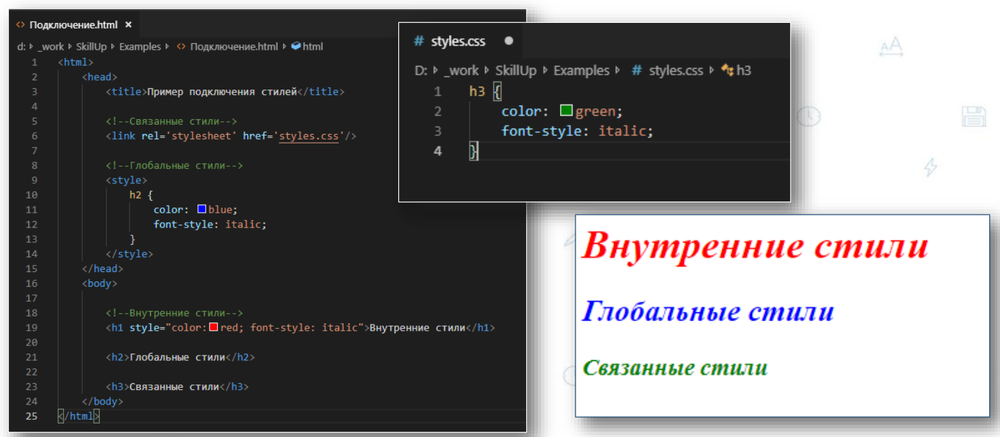
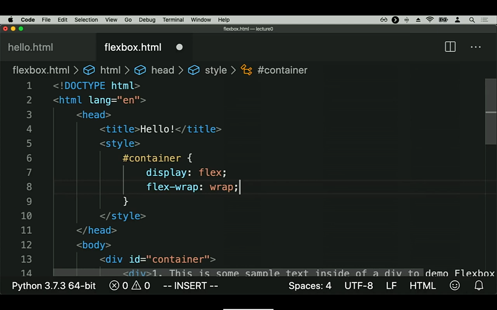
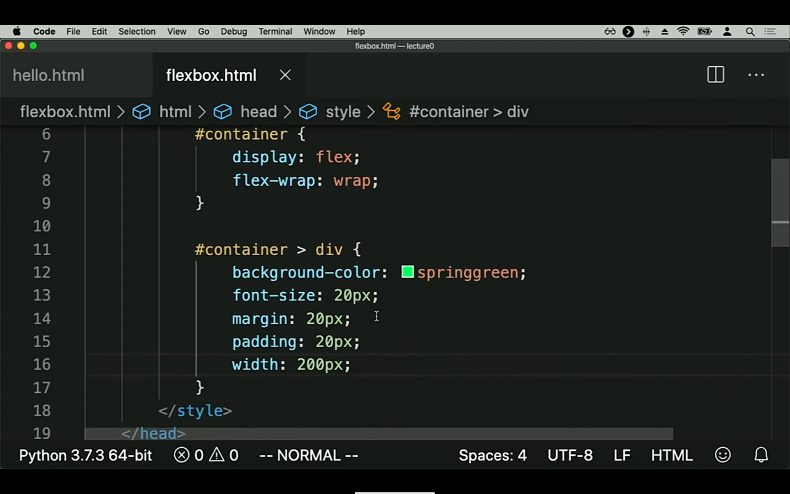
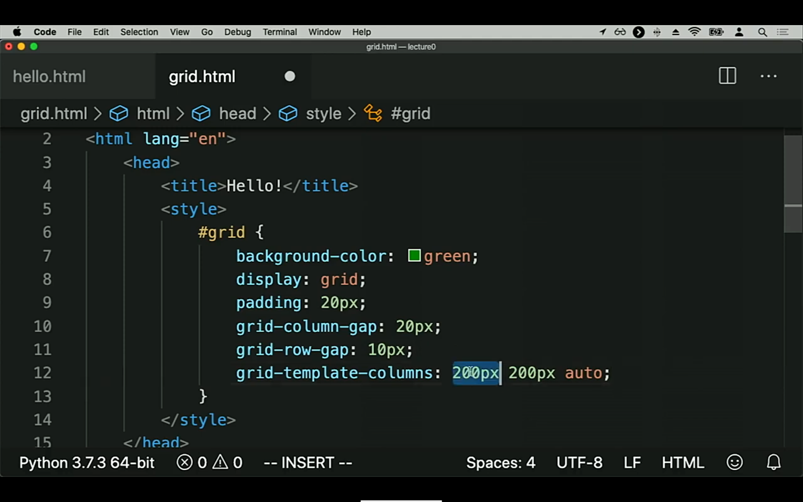
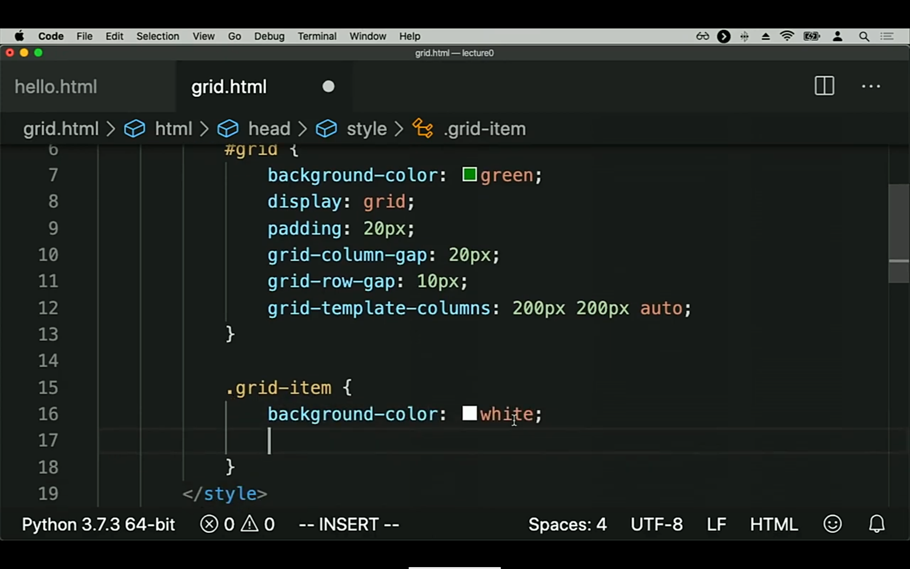
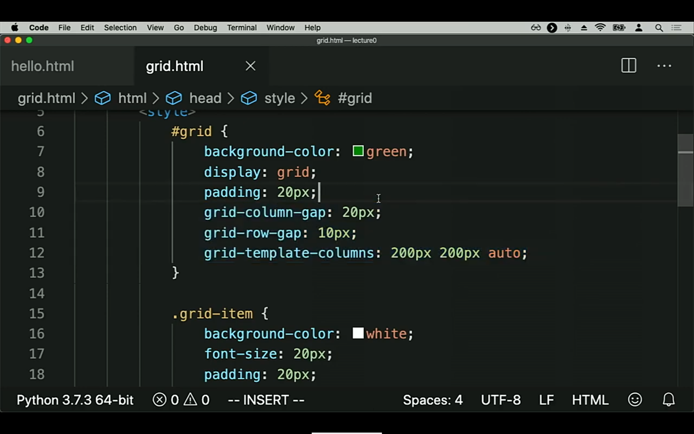

HTML: - html, head, body - title, link, meta - header, main, footer - p, span, h1 - h6, ul - li, ol - li - div, img, a, form, table - audio, video - семантика (теги) - доступность CSS: - классы - шрифты и стили текста - цвет - размер - декорация - фоновые изображения - отступы - размеры и декорирование блоков - взаимодействие с блочными, строчными и блочно-строчными объектами!!!!!! - display - псевдоклассы состояния: hover, active, target, focus - псевдоклассы навигации: first child, last child, first off type, last off type, not - псевдоэлементы: before, after - позиционирование!!!!!!!!!! - chrome F11 - форматы изображений - группы, свойства - методология БЭМ - transition, animation - transform - относительные еденицы и медиа запросы - UI/UX обзорно основы - flex - grid API: - xml - rest - soap - json Препроцессоры и сборщики: - sass/scss - webpack/galp JS: - синтаксис - переменные - типы данных - массивы - объекты - условное ветвление - циклы - функции - DOM!!!! - прокрутка, координаты и размеры - события ПРАКТИКА - верстаем: - верстка своего портфолио: 15 - 20 работ - оптимизация верстки ___________________________________________________________________ timeline - 1 year ------------------------------------------------------------------- критерии качества: надежность - добавление (изменение) контента не ломает верстку удобство пользования на любом устройстве скорость загрузки верстки семантика и доступность -------------------------------------------------------------------- CSS framework CMS: Wordpress Opencard JS общие принципы программирования recursion stack promise classes json ajax сетевые запросы ООП SOLID ___________________________________________________________________ timeline - 2 year ------------------------------------------------------------------- Практика - разработка веб приложений
HTML (от англ. HyperText Markup Language — «язык гипертекстовой разметки») стандартизированный язык разметки документов во Всемирной паутине.
Service Тип документа < !DOCTYPE html > Корень HTML-документа < html>Документ< /html> Содержит метаданные/информацию для документа, блочный < head> Служебная информация < /head> Название сайта, которое отображается во вкладке < title>Текст< /title> Связывает с документом другой документ, блочный < link rel="stylesheet" href="styles.css"> JS вставка < script>Ссылка или код< /script> CSS вставка < style>Ссылка или код< /style> Тело документа, блочный < body>Тело документа< /body> Заголовок документа или раздела, блочный < header>Шапка сайта< /header> Навигационные ссылки, блочный < nav> < a href="">Навигация или меню< /a> < /nav> Основное содержимое документа, блочный < main>Основная часть сайта< /main> Боковая панель сайта, второстепенный контент < aside >Контент< /aside > Контейнер, блочный < div>Контент < /div> Контейнер для внешнего приложения, блочный < embed type="text/html" src="snippet.html" width="500" height="200"> Контейнер для внешнего приложения, блочный < object data="" width="" height="">< /object> Встроенный фрейм (страница в странице) < iframe src="" title="">< /iframe> Кликабельная кнопка, блочный < button type="button">Кнопка< /button> Комментарий, строчный < !-- Комментарий -- > Нижний колонтитул документа или раздела, блочный < footer>Подвал сайта< /footer> Альтернативный контент при не поддержании JS < noscript>Текст< /noscript> Контейнер для контента, который должен быть скрыт при загрузке страницы < template>Контент< /template> Content_group Группировка связанных элементов в независимый объект < article >Cтатья< /article > Заголовок и связанный контент, блочный < hgroup>Заголовок и контент< /hgroup> Тематическое изменение содержания (линия), блочный < hr> Спойлер, блочный < details> < summary>Tекст< /summary> < p>Tекст< /p> < /details> Список определений, блочный < dl> < dt>Термин< /dt> < dd>Значение термина< /dd> < /dl> Список, блочный < ol> Упорядоченный список, блочный < li>Текст< /li> Элемент списка, блочный ... < /ol> Список, блочный < ul> Неупорядоченный список, блочный < li>Текст< /li> Элемент списка, блочный ... < /ul> Неупорядоченный список, блочный < menu> < li>Текст< /li> Элемент списка, блочный ... < /menu> Группу связанных параметров в раскрывающемся списке < optgroup label=""> < option value="">Текст< /option> ... < /optgroup> Раскрывающийся список < label for="cars">Текст< /label> < select name="cars" id="cars"> < option value="">Текст< /option> ... < /select> Раздел в документе < section>Текст< /section> Text Аббревиатура или акроним, строчный < abbr title="Расшифровка"> Aббревиатура < /abbr > Вывод контактной информации, строчный < address >Контакная информация< /address > Жирный текст, строчный < b>Жирный текст< /b> Меньший текст, строчный < small>Текст< /small> Часть текста в строке, строчный < span>Текст< /span> Текст большой важности, строчный < strong>Текст< /strong> Подчеркнутый текст, строчный < u>Текст< /u> Построчный текст < sub>Текст< /sub> Надстрочный текст < sup>Текст< /sup> Изолирует часть текста, строчный < bdi>Текст< /bdi> Переопределяет направление текста, строчный < bdo dir="rtl">Текст< /bdo> Раздел, цитируемый из другого источника, блочный < blockquote cite="ссылка на источник">Текст< /blockquote> Цитата < q>Текст< /q> Вывод даты и времени < time>Текст< /time> Разрыв строки, строчный < br > Название произведения, вывод автора цитаты, строчный < cite>Название< /cite> Часть компьютерного кода, строчный < code>Код< /code> Ассоциирует название продукта с номером продукта, строчный < data value="номер продукта">Название продукта< /data> Перечеркнутый текст, строчный < del>Перечеркнут< /del> Термин, который будет определен, строчный < dfn>Термин< /dfn> Выделенный текст, текст с ударением (более громко), строчный < em>Текст< /em> h1 - h6, Заголовок, блочный < h1>Заголовок< /h1> Текст курсивом. Текст, который отличается (иностранное слово, мысли и т.д.), строчный < i>Курсив< /i> Текст, который был вставлен, строчный < ins>Текст< /ins> Текст, как ввод с клавиатуры, строчный < kbd>Текст< /kbd> Отмеченный/выделенный текст особого внимания, строчный < mark>Текст< /mark> Неправильныйт текст < s>Текст< /s> Текст как вывод компьютерной программы < samp>Текст< /samp> Текст как переменная < var>Текст< /var> Возможный разрыв строки < wbr> Параграф, блочный < p>Текст< /p> Предварительно отформатированный текст, блочный < pre>Текст< /pre> Аннотация Ruby (для восточноазиатской типографики) < ruby> 漢 < rp> ( < /rp>< rt> ㄏㄢˋ < /rt>< rp> ) < /rp> < /ruby> Link Гиперссылка < a href="ссылка" >Текст< /a > Базовый URL-адрес для всех относительных URL-адресов в документе, строчный < base href="..."> Graphic Рисование графики на лету, блочный < canvas id="myCanvas"> Your browser does not support the canvas tag. < /canvas> Контейнер для графики SVG, блочный < svg width="" height=""> < circle cx="" cy="" r="" stroke="" stroke-width="" fill="" /> < /svg> Image Карта-изображения < img src="" alt="" usemap="#workmap"> < map name="workmap"> < area shape="rect" coords="34,44,270,350" alt="Computer" href="computer.htm" > < /map> Изображение, строчный < img src="" alt=""> Kонтейнер для нескольких ресурсов изображений, блочный < picture> < source media="" srcset=""> ... < img src="" alt=""> < /picture> Form Таблица, блочный < table> < caption>Название< /caption> Название таблицы, блочный < thead> Шапка таблицы, блочный < tr> Строка таблицы, блочный < th>Текст< /th> Ячейка шапки таблицы, блочный < /tr> < /thead> < tbody> Тело таблицы, блочный < tr> < td>Текст< /td> Ячейка тела таблицы, блочный < /tr> < /tbody> < tfoot> Подвал таблицы, блочный < tr> < td>Текст< /td> < /tr> < /tfoot> < /table> Группа столбцов в таблице < colgroup> < colspan="2"> < /colgroup> Диалоговое окно, блочный < dialog open> Сообщение < /dialog> Поле многострочного ввода (текстовая область) < textarea rows="" cols="">Текст< /textarea> HTML-форма для ввода пользователя. Отвечает за отправку введенных данных, адрес передачи - атрибут action, метод передачи - атрибут method < form action="/action_page.php"> < fieldset> Групперует элементы формы < legend>Personalia:< /legend> Заголовок формы < label for="fname">First name:< /label> Заголовок поля < input type="text" id="fname" name="fname"> ... < input type="submit" value="Submit"> < /fieldset> < /form> Форма с предопределённым списком вариантов для поля ввода < form action="/action_page.php" method="get"> < label for="browser">Choose your browser from the list:< /label> < input list="browsers" name="browser" id="browser"> < datalist id="browsers"> < option value="Edge"> < option value="Firefox"> < option value="Chrome"> < option value="Opera"> < option value="Safari"> < /datalist > < input type="submit"> < /form > Раздел поиска < search> < form> < input name="" id="" placeholder=""> < /form> < /search> Результат расчета < form oninput="x.value=parseInt(a.value)+parseInt(b.value)"> < input type="range" id="a" value="50"> +< input type="number" id="b" value="25"> =< output name="x" for="a b">< /output> < /form> Скалярное измерение в известном диапазоне (манометр) < label for="idname">Текст< /label> < meter id="idname" value="">Текст< /meter> Представляет ход выполнения задачи, блочный < label for="file">Downloading progress:< /label> < progress id="file" value="32" max="100"> 32% < /progress> Media_content Групировка медиа-элементов, блочный < figure> < img src="" alt=""> < figcaption>Текст< /figcaption> < /figure> Встроенный аудио контент < audio controls> < source src="horse.ogg" type="audio/ogg"> < source src="horse.mp3" type="audio/mpeg"> < track src="" kind="" srclang="" label=""> текстовые дорожки Your browser does not support the audio tag. < /audio> Встроенный видио контент, блочный формат МР4 - наиболее распространен, формат Webm - хорошо оптимизируется и позволяет воспроизводить видео на прозрачном фоне < video width="" height="" controls> < source src="" type=""> < track src="" kind="" srclang="" label=""> текстовые дорожки < /video> Валидаторы HTML: glitch w3 Мета тег < meta charset="UTF-8"> - Кодировка < meta name="viewport" content="width=1170"> - фиксированная ширина вся помещается в экран < meta name="viewport" content="width=device-width"> - адаптивный < meta name="viewport" content="width=device-width,initial-scale=1.0,maximum-scale=1.0,user-scalable=0"> - параметры адаптивности < meta name="format-detection" content="telephone=no"> - отключает ссылку у номера телефона на iOS < meta name="description" content="описание до 140 символов"> - для SEO < meta name="keywords" content="ключевые слова через запятую до 20"> - ключевые слова для SEO доступ поисковых роботов к страице: < meta name="robots" content="noindex, nofollow"> < meta name="robots" content="none"> < meta name="robots" content="noimageindex, nofollow"> - запрет индексации картинок и ссылок технические: < meta name="Author" content="Дарт Вейдер"> - Автор страницы < meta name="Copyright" content="Люк Скайвокер"> - Авторские права < meta name="Address" content="Татуин, кратер № 97"> - Адрес автора < meta http-equiv="refresh" content="0; url="> - обновляет страницу либо перенаправляет пользователя, указать количество секунд до перенаправления и адрес страницы социальные сети: < meta property="og:locale" content="ru_RU"> - локализация для русcкоязычного сайта < meta property="og:type" content="article"> - тип контента статья < meta property="og:title" content="META теги"> - заголовок записи в социальной сети < meta property="og:description" content="описание страницы"> - описание страницы < meta property="og:image" content="http://fls.guru/meta/img/bg.jpg"> - изображение для записи в соцсети < meta property="og:url" content="http://fls.guru/meta/ "> - ссылка на текущую страницу < meta property="og:site_name" content="Название сайта"> - Название сайта Facebook https://developers.facebook.com/tools/debug/sharing/ https://ruogp.me/ < meta name="twitter:card" content="summary"> - тип карты твитер < meta name="twitter:site" content="Автор"> - имя/логин автора < meta name="twitter:title" content="META теги"> - название страницы < meta name="twitter:description" content="описание страницы"> - описание страницы < meta name="twitter:image" content="http://fls.guru/meta/img/bg.jpg"> - изображение для записи в соцсети https://cards-dev.twitter.com/validator https://developer.twitter.com/en/docs/tweets/optimize-with-cards/guides/getting-started
Стилем или CSS (Cascading Style Sheets, каскадные таблицы стилей) называется набор параметров форматирования, который применяется к элементам документа, чтобы изменить их внешний вид.

Синтаксис div.text {} применяем css-свойство к тегу div с классом text .block.text {} применяем к тегам, содержащим оба класса .block,.text {} применяем к тегам, содержащим один из классов .block .text {} применяем к тегам, содержащим класс text и находящийся внутри элемента с классом block .text > div {} применяем к первому div верхнего уровня внутри элемента с классом text a + b sibling a : b pseudoclass a :: b pseudoelement Параметр в качестве селектора: [class*="__container"] {} применяем css-свойство ко всем элементам с атрибутом class, значение которого содержит __container Шрифты подключаем любо в html тегом link либо в scss через @import fonts.google.com nomail.com.ua font2web.com БЭМ - блок - часть кода, которая повторяется или может повторяться самостоятельно - элемент - это часть блока. имя класса блока__имя класса элемента. - модификатор - дополняет или уточняет стиль блока или элемента имя класса блока_модификатор имя класса блока__имя класса элемента_модификатор микс - позволяет использовать блоки и элементы в одном объекте Источник: ru.bem.info Наследование %message { font-family: sans-serif; font-size: 18px; font-weight: bold; border: 1px solid black; padding: 20px; maigin: 20px; } .success { @extend %message; background-color: green; } .warning { @extend %message; background-color: orange; } .error { @extend %message; background-color: red; } Единицы измерения Абсолютные px (пиксель) Все остальные еденицы измерения пересчитываются браузером в пиксели Относительные (). . : em - равен текущему размеру объекта Лучше использовать для медиа-запросов и в случае когда нужно привязаться к текущему размеру шрифта rem - равен размеру шрифта в теге html, а если там нет, то браузера по умолчанию (16px) Т.е. не зависит от резмаера шрифта родителя. Лучше использовать для размеров шрифтов, отступов, не указывая размер для тега html % - разные свойства css вычисляют % от разных оснований Лучше использовать для отзывчивых резиновых конструкций, для позиционирования объектов и для скрола vw, vh, vmin, vmax - работают относительно окна браузера (viewport) Лучше использовать для полноэкранных блоков и scss вычислений fr - единица измерения в модуле grid ex - единица измерения относительно размера прописной "е" ch - единица измерения относительно размера 0 Обнуление стилей Убираем отступы: *{ padding: 0; margin: 0; border: 0; } Изменение ширины блока: *,*:before,*:after{ -moz-box-sizing: border-box; -webkit-box-sizing: border-box; box-sizing: border-box; } Снятие обводки елементов по умолчанию: :focus,:active{outline: none;} a:focus,a:active{outline: none;} Делаем теги блочными: nav,footer,header,aside{display: block;} Уравнять поведение шрифтов в разных браузерах: html,body{ height: 100%; width: 100%; font-size: 100%; line-height: 1; font-size: 14px; -ms-text-size-adjust: 100%; -moz-text-size-adjust: 100%; -webkit-text-size-adjust: 100%; } Теги формы наследуют семейство шрифта: input,button,textarea{font-family: inherit;} Убираем отличительные особенности браузеров: input::-ms-clear{display: none;} button{cursor: pointer;} button::-moz-focus-inner {padding:0;border:0;} a,a:visited{text-decoration: none;} a:hover{text-decoration: none;} ul li{list-style: none;} img{vertical-align: top;} Обнуляем стили заголовков: h1,h2,h3,h4,h5,h6{font-size:inherit;font-weight: 400;} Свойства font-family - семейство шрифта. font-size - размер шрифта елемента. font-style - начертание шрифта (курсив, наклон и нормальный) font-weight - насыщенность (вес) шрифта color - цвет текста text-align - горизонтальное выравнивание текста text-decoration - оформление текста (подчеркивание, перечеркивание и т.д.) text-shadow - добавляет тень к тексту text-transform - преобразование заглавных и прописных символов text-ident - отступ первой строки от края блока letter-spacing - определяет интервал между символами word-spacing - определяет интервал между словами white-space - управляет свойствами пробелов между словами line-height - устанавливает межстрочный интервал текста padding - внутренний отступ блочных тегов margin - внешний отступ блочных тегов width - ширина блочных тегов max-width - устанавливает макимальную ширину блочных тегов min-width - устанавливает минимальную ширину блочных тегов height - устанавливает высоту блочных тегов max-height - устанавливает максимальную высоту блочных тегов min-height - устанавливает минимальную высоту блочных тегов overflow - управляет отображением содержания блочного елемента display - определяет как елемент должен быть показан в документе border - граница блока border-radius - устанавливает радиус скругления уголков блока outline - внешняя граница блока box-shadow - добавляет тень к блоку opacity - определяет уровень прозрачности элемента visibility - отображение или скрытие блока background - управляет фоном элемента background-color - цвет фона элемента background-image - фоновое изображение или градиентная заливка background-repeat - повторение фонового изображения background-position - положение фонового изображения background-attachment - прокручивание фона вместе с содержимым элемента background-size - размеры фонового изображения background позволяет задать несколько фоновых изображений одному блоку background-origin и background-clip отвечают за показ фона вместе с границей border. Псевдокласс - это модификатор селектора .link:hover{} :hover - срабатывает при наведении :visited - срабатывает для посещенных ссылок :active - срабатывает при нажатии на элемент :focus - срабатывает при получении элементом фокуса :first-child - обращение к первому элементу в блоке :last-child - обращение к последнему элементу в блоке :nth-child(номер элемента по порядку, odd, even) - обращение к конкретному элементу в блоке Псевдоэлемент - строчный, модификатор содержимого элемента, синтаксис .text:first-line{} либо .text::first-line{} ::first-line{} - задает стиль первой строки текста ::first-letter{} - задает стиль первого символа ::before - для отображения контента до содержимого элемента, к которому применяется. Обязательное свойство content: ''; ::after - для отображения контента после содержимого элемента, к которому применяется. Обязательное свойство content: ''; .text:hover::befor{} position - совйство позиционирования устанавливает тип позиционирования элемента относительно других элементов или окна браузера position: static; - по умолчанию у всех блоков position: relative; - положение относительно изначального места в коде, обязательно с: left, top, right, bottom - управляют позицией элемента z-index - управляет наложением элементов position: absolute; - утрачивает связь с местом в коде и свойствами тега, обязательно с: left, top, right, bottom - управляют позицией элемента Для взаиморасположения относительно друг друга у одного элемента должно быть absolute у другого relative position: fixed; - фиксирует элемент относительно окна браузера не завися от элементов с relative и прокрутки обязательно с: left, top, right, bottom - управляют позицией элемента position: sticky; - переводит элемент из static в fixed при достижении элементом указаной позиции обязательно с: left, top, right, bottom - управляют позицией элемента transform - применяется только к блочным объектам transform: translate(0px, 0px); - translate сдвигает элемент на новое место transform: scale(1, 1); - scale масштабирует изображения, т.е. zoom. При отрицательном значении - зеркалит. transform: rotate(0deg); -https://minfin.com.ua/2023/11/30/115247867/ поворачивает элемент. Положительное значение по часовой, отрицетельное - против. transform: skew(0deg, 0deg); - деформирует стороны объекта по вертикали и горизонтали. transform: matrix(a, b, c, d, e); - позволяет объединить трансформации. Значения без едениц измерения. transform: translate(0px, 0px) scale(1, 1) rotate(0deg); transform-origin: center; - смещает центр трансформации perspective: 0px; - установка глубины перспективы perspective-origin: center; - смена точки начала координат transform: translate3d(0px, 0px, 0px); transform: scale3d(1, 1, 1); transform: rotate3d(x, y, z, deg); transform: matrix3d(n, n, n, n, n, n, n, n, n, n, n, n, n, n, n, n); - 16 значений transform: translate3d(0px, 0px, 0px) rotate3d(1, 1, 1, 0deg); transform-style: flat; - задает стиль трансформации backface-visibility: visible; - показывает обратную сторону объекта Sass Sass - препроцессор, добавляет функционала в css SCSS - синтаксис Sass похожий на синтаксис css вложенность - писать правила css внутрь других правил >p - применить правила css только к верхнему(первому) параграфу & - подставляет вместо себя класс, внутри которого указан. Удобно для указания псевдоклассов и псевдо элементов. $var:80px; - переменная var со значением 80 пикселей @import "имя файла"; - импорт файлов шаблоны: %tpl {параметры css} - задаём шаблон tpl @extend %tpl; - вставляем в нужный блок правил css либо .tpl {параметры css} - задаём шаблон tpl @extend .tpl; - вставляем в нужный блок правил css миксины: @mixin exempl($var) {font-size: $var;} - объявляем миксин с переменной @include exempl(100px); - вставляем в нужный блок правил css со значением поддерживает математические рассчеты комментарии: /* */ - отображается и в файле scss и в css // - отображается только в файле scss manual: https://sass-scss.ru/ Flex Flexbox:   display: flex; - включает флекс разметку display: inline-flex; - строчный флекс-контейнер justify-content - определяет выравнивание вдоль основной (горизонтальной) оси justify-content: flex-start; - елементы слева justify-content: flex-end; - елементы справа justify-content: center; - елементы в центре justify-content: space-between; - пространство между елементами justify-content: space-around; - пространство вокруг елементов для флекс-контейнера: align-items - определяет поведение вдоль вертикальной оси align-items: stretch; - елементы подстраиваются под самый высокий align-items: flex-start; - высота флекс-елемента от верха на высоту контента align-items: flex-end; - высота флекс-елемента от низа на высоту контента align-items: center; - флекс-елементы выстроятся по горизонтальному центру самого высокого елемента align-items: baseline; - выстраивает флекс-елементы по базовой линии flex-wrap: nowrap; - флекс-елементы не адаптируются flex-wrap: wrap; - флекс-елементы адаптируются flex-wrap: wrap-reverse; - флекс-елементы адаптируются в обратном порядке для флекс-елемента: align-self - переопределяет выравнивание align-self: stretch; align-self: center; align-self: flex-start; align-self: flex-end; order - порядок вывода елементов order: 1; - выводим первым flex-basis - базовый размер элемента flex-basis: auto; - по размеру контента flex-grow - возможность увеличиваться в размере flex-grow: 0; - не больше чем flex-basis flex-shrink - возможность уменьшаться в размере flex-shrink: 1; - разрешено становиться меньше flex: 0 1 auto; - короткая запись flex-grow flex-shrink flex-basis flex-direction - устанавливает основную ось flex-direction: row; - в ряд flex-direction: row-reverse; - в обратную сторону в обратном порядке flex-direction: column; - основная ось вертикально flex-direction: column-revers; - вертикально снизу вверх https://fls.guru/flexbox.html GRID    GRID Layout: display: grid; - определяет блочный грид-контейнер display: inline-grid; - определяет строчный грид-контейнер grid-template-columns: ; - управление колонками grid-template-rows ; - управление рядами grid-template-columns: 200px minmax(150px, 1fr) 200px; - первая колонка шириной 200рх, вторая - минимум 150рх и максимум на всю ширину грид-контейнера, третья - шириной 200рх grid-template-rows: 1fr 1fr; - два ряда делят высоту грид-контейнера поровну grid-template-columns: fit-content(400px) 1fr auto; - ширина первой колонки по контенту, но не шире 400рх, вторая колонка - вся свободная ширина блока, третья колонка по ширине контента grid-template-columns: repeat(3, 1fr); - 3 колонки размером 1fr grid-template-areas: ; - управляет областями grid-area: ; - применяется к елементам grid-template: repeat(2, 1fr) / repeat(3, 1fr); - две равные строки и три равные колонки grid-template: [start] "header header" 100px [row2] [row2] "side content" 1fr [row-end] / 150px 1fr; - управление областями, через свойство grid-area присваиваем имена элементам, в первом ряду header занимает две колонки, второй ряд содержит колонки side и content, высота рядов 1fr, ширина колонок 150px 1fr. grid-auto-rows: ; - управляет рядом неявной сетки, т.е. ряд, который не обозначен в grid-template-rows grid-auto-columns: ; - если не задан grid-template-columns grid-auto-flow: row; - выстраивает грид-элементы поочередно в ряд grid-auto-flow: column; - выстраивает грид-элементы поочередно в колонку grid-auto-flow: dense; - выстраивает грид-элементы в произвольном порядке Размещение элементов с помощью линий сетки: grid-row-start: auto; grid-row-end: auto; grid-column-start: auto; grid-column-end: auto; grid-row-start: span 2; объект занимает 2 строчки grid-template-rows: [start] 1fr [row2] 1fr [row-end]; - две строки одинаковой высоты и [имена линий] между строк сверху вниз grid-template-columns: [start] 1fr [col2] 1fr [col3] 1fr [col-end]; - три столбца одинаковой ширины и [имена линий] между столбцами слева направо grid-row: 1 / 2; - применяется к элементу, указывает начало и конец элемента по линиям рядов grid-column: 1 / 2; - применяется к элементу, указывает начало и конец элемента по линиям столбцов или grid-row: start / row2; - применяется к элементу, указывает начало и конец элемента по линиям рядов grid-column: start / col2; - применяется к элементу, указывает начало и конец элемента по линиям столбцов order: 1; - задается каждому елементу сетки и определяет порядок вывода елемента justify-items: stretch; - растягивает/прижимает елементы в ячейках вправо/влево align-items: stretch; - растягивает/прижимает елементы в ячейках вверх/вниз row-gap: 20px; - расстояние между строками column-gap: 20px; - расстояние между колонками или gap: 20px; - и для строк и для колонок одновременно Адаптивная верстка Адаптивная верстка: отзывчивая - всё в %, указываем только максимальную ширину для body, весь контент на своём месте, отзывается на изменение ширины экрана. адаптивная - брейкпоинты, медиа-запросы, контент перестраивается на брейкпоинтах при изменении ширины экрана. отзывчиво-адаптивная - делаем отзывчиую пока читается контент при уменьшении ширины экрана. При ширине плохо читабельного контента далем брейкпоинт - адаптив. <.meta name="viewport" content="width=device-width"> Брейкпоинт: @media (max-width:1200px){ .container{ max-width: 970px; } } @media (max-width:992px){ .container{ max-width: 750px; } } @media (max-width:767px){ .container{ max-width: none; } } <.div class="container"><./div> - обворачиваем весь контент @import url(color.css) screen and (color); - медиа-запрос в css, <.link rel="stylesheet" media="screen and (color)" href="example.css"> - медиа-запрос в html: файл стилей подключится в только при выполнении условия медиа-запроса Animation Анимация: transition-duration - время перехода transition-property - содержит css свойства к которым будет применен переход. Сколько свойств - столько и значений transition-duration через запятую. transition-delay - время задержки перехода transition-timing-function - сценарий анимации общая запись: transition: all 1s ease 0s; - transition: property duration function delay; transition: padding 1s ease 0s, color 2s ease-in 0.5s; @keyframes name{ from{ ключевой кадр } to{ ключевой кадр } } или @keyframes name{ 0%{ left: 0; } 50%{ left: 250px; } 100%{ left: 500px; } } Animation animation-name: имя ключевых кадров, имя ключевых кадров № 2; - список применяемых к элементу анимаций (кадров) animation-duration - продолжительность анимации animation-timing-function - сценарий анимации animation-iteration-count - количество повторов ключевых кадров animation-direction - тип и направление проигрования ключевых кадров animation-play-state - запускает либо приостанавливает анимацию по событию animation-name: none; - возвращает анимацию на исходную animation-delay - задержка перед началом анимации animation-fill-mode - определяет какие свойства применятся после завершения анимации animation: name duration function count direction delay mode; animation: firstname 2s linear infinite alternate 0s forwards, secondname 5s ease infinite alternate 0s forwards; Графика Графика: JPEG/JPG - растровый, оптимизируется хорошо, лучше для контента PNG - растровый, оптимизируется плохо, может быть прозрачным, лучше для фона и элементов дизайна GIF - растровый, до 256 цветов, видеоролик в формате изображения, оптимизируется хорошо SVG - векторный, хорошо подходит для иконок и при масштабировании изображения WebP - замена всех растровых форматов (прозрачность, анимация, хорошо оптимизируется) ico - растровый, оптимизируется хорошо, может быть прозрачным, 16х16рх, для иконок < link rel="shortcut icon" href="favicon.ico"> object - работа с изображениями в контейнере как background в фоне object-fit: fill; - управляет изображением внутри контейнера object-position: center; - позиционирование изображения относительно родителя < picture> < source srcset="" type="" media=""> < img src="" alt=""> < /picture> Тег picture - контейнер для исходных материалов, позволяет выводить нужное изображение в зависимости от условий. Адаптив без css, ускоряет загрузку верстки. Если браузер не поддерживает picture, то выведет img. OnlineTutorialsYT Как сделать Уроки HTML CSS JS Верстка сайта CSSOM
(). .





JavaScript — мультипарадигменный язык программирования. Поддерживает объектно-ориентированный, императивный и функциональный стили. Является реализацией спецификации ECMAScript. JavaScript обычно используется как встраиваемый язык для программного доступа к объектам приложений. Позволяет взаимодействовать с элементами на странице, изменять их содержание и стиль, реагировать на события, такие как клики и наведение курсора, а также создавать сложные анимации и эффекты.
<.script>alert('Привет мир!') <./script> - вставить скрипт в html, либо <.script src="/path/to/script.js"> <./script> - подключить в html файл со скриптом. "use strict" или 'use strict' - строгий режим. Отключить невозможно. Классы и модули строгий режим включают автоматически. Имена должны быть легко читаемые, camelCase, описательные и лаконичные. " " или ' ' - это строка ` ` - вставить выражение в строку, обернув в ${...} // - однострочный комментарий /*...*/ - многострочный комментарий
Блок инструкций: { console.log('Учим'); console.log('JS'); } Область видимости {} const KNOW_VAL = I know the value; - константа с известным заранее значением пишем в верхнем регистре const donotKnow = I don't know the value; - константа с неизвестным заранее значением var - ключевое слово переменной, можно использовать до объявления. область видимости в пределах модуля, исключение: если объявлена в теле функции, то видна только в теле функции.
Значения: - фиксированные значения - литералы - литерал целого числа: 25 - литерал дробного числа: 23.8 - литерал строки: 'Javascript', "Javascript" - литерал массива: [], [15,7,89] - литерал объекта: {}, {name: 'Javascript', surname: 'Javascript'} - литерал регулярного выражения: (ab|bc) - значения констант: const MAX_VALUE = 17; - значения переменных: var section = 'JS'; let arr = ['HTML','CSS','JS']; Выражения - комбинация значений переменных и операторов Ключевые слова - определяет какое действие нужно выполнить
спецификация состоит из: describe ("pow", function(){ // описываем функцию pow it ("возводит в степень n", function() { // рабочий блок - описывает что делает assert.equal(pow(2, 3), 8); // функция assert проверяет работу функции pow }); });
let user = {}; - пользователь без адреса alert(user?.adress?.street); - undefined (без ошибки) delete user?.name - удалит user.name если user существует obj?.prop - вернёт obj.prop если obj есть, иначе undefined obj?.[prop] - вернёт obj[prop] если obj есть, иначе undefined obj.method?.() - вызовет obj.method если он есть, иначе undefined
Тип - набор характеристик значения. Тип - не у переменной, а у значения. Тип переменной присваиваится вместе со значением.
Object {property1: value1, property2: value2} let someObj = new Object(); let someObj = { key1: value1, }; console.log(someObj.key); либо console.log(someObj['key']); someObj.key2 = value2; - добавил в объект свойство (ключ: значение) delete someObj.key2; - удалил из объекта свойство (ключ: значение) let obj = someObj; - скопировал ссылку на объект в другую переменную let obj = Object.assign({}, someObj); - сделал дубликат объекта console.log(userInfo?.address?.street); - опциональная цепочка, выдает значение свойства если оно есть, если его нет выдаст undefined без ошибки if ("key1" in someObj) {} - проверка на наличие свойства for (let key in object) {} - перебирает все свойства объекта let someObj = { key1: value1, someFunc: function () {}, - метод объекта либо someFunc() {}, }; Function - это Object, но выведен отдельно для простоты определения функций Object.getOwnPropertySymbols(obj) - получить все свойства объекта с ключами-символами. Reflect.ownKeys(obj) - возвращает все ключи объекта включая символьные.
Примитивы - это конкретные значения. С помощью объектов-оберток (Number, String, ...) все примитивы кроме null и undefined имеют методы работы с ними.
number - числа целые и с точкой - infinity (безконечность) - NaN (Not a Number) Обычные числа в JS - это числа с плавающей точкой двойной точности (double precision floating point numbers), 64-битный формат IEEE-754. BigInt - числа позволяют работать с числами произвольной длины. 123e6 = 123 000 000 (e6 - это 6 нулей) 123e-6 = 0,000123 let someNum = 1000000; лучше так: let someNum = 1e6; let num = 0.000001; let num = 1e-6; 0b11111111 - бинарная (двоичная) форма записи числа 255 0о377 - восьмиричная форма записи числа 255 0xff - шестнадцатиричная форма записи числа 255
string - строка ' ', " ", `${}` "Какое-то \n предложение \n\t тут": \n - перевод строки, \t - табуляция (отступ), \ - экранирование let someText = "text"; console.log(someText.length); - длина строки let firstSymbol = someText[0]; - получаем символ строки let lastSymbol = someText[someText.length-1]; - последний символ строки for (const char of someText) { - перебирает символы строки console.log(char); } someText.toUpperCase() - все буквы большие someText.toLowerCase() - все буквы маленькие someText.indexOf(substr, pos) - ищет подстроку substr в строке someText, pos - необязательный, символ с которого искать includes(substr, pos), startsWith(substr), endsWith(substr) - проверяет на наличие, возвращает true или false slice(start, end) - возвращает часть строки без end
Два Symbol("id") с одинаковым "id" - это разные символы. let id = Symbol.for("id") - читает символ "id" из глобального реестра, если символа нет, то создаст новый глобальный символ. В глобальном реестре под одним именем один символ. Используется как "скрытые" свойства объектов, т.к. символьное свойство не появится в for..in, например: - Symbol.iterator - для итераторов, - Symbol.toPrimitive - для преобразования объектов в примитивы.
let id = Symbol("id"); // создание символа let user = { name: "Вася", // не преобразуются в строку автоматически [id]: 123 // просто id:123 не работает, т.к. нужно значение переменной id, а не срока id. };
typeof 0 - number typeof true - boolean typeof 'JS' - string typeof undefined - undefined typeof Math - object typeof Symbol ('JS') - symbol typeof null - object - баг, это null typeof function() {} - function - баг, это object typeof NaN - number - Not a Number возвращает number
Основные приведения: строковое, численное и логическое. '', 0, null, undefined, Nan, false - приводятся Boolean() к false ("false" - значения). Boolean('Hello') - true Boolean(' ') - true, пробел - это символ Boolean('0') - true, '0' приводится к строке Boolean(0) - false Boolean([]) - true Boolean({}) - true Операторы приводят значения null к 0, а undefined к NaN: null > 0 - false undefined > 0 - false null >= 0 - true undefined < 0 - false null == 0 - false undefined == 0 - false NaN возвращает false при любых сравнениях. При нестрогом равенстве null/undefined ни к чему не приводятся и равны только друг другу. Строки и числа: String(value); - приведение к строке Number(value); - приведение к числу Number("123"); - 123 Number("123z"); - NaN Number(true); - 1 Number(false); - 0 +true - 1 +'' - 0 null + 2 - number 2, null приводится к 0 1 + '2' - string 12 '' + 1 + 0 - string 10 '' - 1 + 0 - number -1, у строки есть только оператор сложения (конкатенация), поэтому -1 это число + 0 '3' + '8' - number 24 4 + 10 + 'px' - string 14px 'px' + 4 + 10 - string px410 '42' - 40 - number 2 '42px' - 40 - NaN, px к числу не приводится undefined + 2 - NaN, undefined приводится к NaN
Основные приведения: строковое, численное и логическое. '', 0, null, undefined, Nan, false - приводятся Boolean() к false ("false" - значения). Boolean('Hello') - true Boolean(' ') - true, пробел - это символ Boolean('0') - true, '0' приводится к строке Boolean(0) - false Boolean([]) - true Boolean({}) - true Операторы приводят значения null к 0, а undefined к NaN: null > 0 - false undefined > 0 - false null >= 0 - true undefined < 0 - false null == 0 - false undefined == 0 - false NaN возвращает false при любых сравнениях. При нестрогом равенстве null/undefined ни к чему не приводятся и равны только друг другу.
Строки и числа: String(value); - приведение к строке Number(value); - приведение к числу Number("123"); - 123 Number("123z"); - NaN Number(true); - 1 Number(false); - 0 +true - 1 +'' - 0 null + 2 - number 2, null приводится к 0 1 + '2' - string 12 '' + 1 + 0 - string 10 '' - 1 + 0 - number -1, у строки есть только оператор сложения (конкатенация), поэтому -1 это число + 0 '3' + '8' - number 24 4 + 10 + 'px' - string 14px 'px' + 4 + 10 - string px410 '42' - 40 - number 2 '42px' - 40 - NaN, px к числу не приводится undefined + 2 - NaN, undefined приводится к NaN
parseInt() - возвращает целое число, которое смогло получить из параметра parseFloat()- возвращает число с точкой, которое смогло получить из параметра parseInt(str, base) - преобразует строку в число, base - система исчисления 2 =< base =< 36, по умолчанию 10 parseInt('0xff', 16) - 255, дополнительное свойство - читает кодировки чисел parseInt('100px') - 100 parseFloat('12.5em') - 12.5 parseInt('a123') - NaN, не смог прочитать ни одной цифры num.toString(base) - преобразует число num в строку в виде системы исчисления base (от 2 до 32, по умолчанию 10) Если вызывать метод на числе, то 123..toString(36) или (123).toString(36) num.toFixed(n) - округляет до n знаков после запятой и возвращает результат в виде строки isNaN(value) - преобразует в число и проверяет является ли оно NaN. NaN никогда не будет равно NaN. NaN === NaN - false isFinite(value) - преобразует в число и возвращает true если обычное число Object.is(a, b) - идентично a === b Object.is(NaN, NaN) === true Object.is(0, -0) === false, технически 0 и -0 это разные значения встроенный объект Math - математические операции над числами Преобразование объектов в примитивы: obj[Symbol.toPrimitive](hint) - вызывается метод объекта если он существует Если hint = string, то вызывается obj.toString(), если такого нет, то obj.valueOf() Если hint = number или default, то вызывается obj.valueOf(), если такого нет, то obj.toString().
Операторы: операнд - это то, к чему применяется оператор -х; - унарный оператор - применяется к одному операнду у - х; - бинарный оператор - применяется к двум операндам +операнд - приведение к числу = оператор присваивания все операторы возвращают значение + сложения, если одно из слагаемых строка, то сумма - строка. Остальные операторы дают число. - вычитания * умножения / деления % взятие остатка от деления (5%2 = 1) ** возведения в степень Инкремент/декремент можно применять только к переменной. ++ инкремент увеличивает на 1 -- декремент уменьшает на 1 counter++ постфиксная форма возвращает старое значение (до увеличения/уменьшения числа) ++counter префиксная форма возвращает новое значение операторы == vs === (нестрогое vs строгое) == сравнивает с приведением типов === сравнивает без приведения типов 2 == '2' true 2 === '2' false undefined == null true undefined === null false '0' == false true '0' == 0 true 0 == 0 true false == '' true false == [] true false == {} false '' == 0 true '' == [] true '' == {} false '' == null false {} == {} false {} === {} false == и === для объектов работают одинаково. Два объекта равны если это один и тот же объект. 2**2 = 4 4**(1/2) = 2 квадратный корень 8**(1/3) = 2 кубический корень Приоритет: унарный плюс + унарный минус - возведение в степень ** умножение * деление / сложение + вычитание - присваивание = Операторы сравнения: a > b, a < b больше/меньше a >= b, a <= b больше/меньше или равно a == b равно a === b строгое равно a != b не равно a !== b строгое не равно Все операторы возвращают true или false. Строки сравниваются посимвольно. При сравнении разных типов - приведение к числу. Оператор запятая (,): - позволяет вычислять несколько выражений, разделяя их запятой. - каждое выражение выполняется, но возвращается результат только последнего. let a = (1+2, 3+4); скобки важны, т.к. приоритет ниже чем = alert(a); 7-результат 3+4. Побитовые операторы: & AND и | OR или ^ XOR побитовое исключающие или ~ NOT не << LEFT SHIFT левый сдвиг >> RIGHT SHIFT правый сдвиг >>> ZERO-FILL RIGHT SHIFT правый сдвиг с заполнением нулями Побитовые операторы работают с 32-разрядными целыми числами (приводят к ним), на уровне их внутреннего двоичного представления. Логические операторы: || или - если любой из аргументов true, то вернет true, иначе false true || true true false || true true true || false true false || false false - цепочка или || возвращает первое истиное значение или или последнее, если такое значение не найдено. - цепочка вычисляется слева направо. undefined || null || 0 результат 0. && и - если оба аргумента true, то вернет true, иначе false true && true true false && true false true && false false false && false false - цепочка или && возвращает первое ложное значение или или последнее, если такое значение не найдено. - приоритет и && больше чем или ||. Или || спотыкается на правде, и && спотыкается на лжи. ! не - принимает один аргумент, приводит к логическому типу и возвращает к противоположное значение. !true -> false !0 -> true !! "non-empty string" true !! null false !!операнд - приведение к boolean Приоритет ! наивысший из всех логических операторов. ?? - оператор объединения с null, возвращает первое определённое значение, если оно отличается от null или undefined. операнд ?? операнд - вернет операнд не равный null или undefined || возвращает первое истинное значение, ?? возвращает первое определённое значение. let height = 0; height || 100 вернет 100 height ?? 100 вернет 0 a ?? b результат a, если а определено, иначе b let user; alert(user??"Аноним"); Аноним Запрещено использовать оператор ?? вместе с && и || без явного указания приоритета скобками. ... - троеточие, обозначает оператор "остаточные параметры" если нахидотся в конце списка аргументов функции либо оператор "расширения". - оператор "остаточные параметры" используется, чтобы создавать функции с неопределённым числом аргументов, собирает оставшиеся параметры в массив: let [name1, name2, ...rest] = ["Julius", "Caesar", "Consul", "of the Roman Repablic"]; - оператор "расширения" позволяет вставить массив в функцию, расширяя перебираемый объект arr в список аргументов (f...arr); оператор "расширения" работает только с итерируемыми объектами.
операторы == vs === (нестрогое vs строгое) == сравнивает с приведением типов === сравнивает без приведения типов 2 == '2' true 2 === '2' false undefined == null true undefined === null false '0' == false true '0' == 0 true 0 == 0 true false == '' true false == [] true false == {} false '' == 0 true '' == [] true '' == {} false '' == null false {} == {} false {} === {} false == и === для объектов работают одинаково. Два объекта равны если это один и тот же объект. 2**2 = 4 4**(1/2) = 2 квадратный корень 8**(1/3) = 2 кубический корень
Побитовые операторы: & AND и | OR или ^ XOR побитовое исключающие или ~ NOT не << LEFT SHIFT левый сдвиг >> RIGHT SHIFT правый сдвиг >>> ZERO-FILL RIGHT SHIFT правый сдвиг с заполнением нулями Побитовые операторы работают с 32-разрядными целыми числами (приводят к ним), на уровне их внутреннего двоичного представления.
Условное ветвление: if (...) { ... } else if (...) { ... } - вычисляет условие в скобках - приводит к логическому типу - если условие true, то выполняет блок кода Блоков else и else if может быть сколько угодно, а может и не быть. if () {} if () {} else {} if () {} else if () {} else {} () ? valueIfTrue : valueIfFalse; тоже самое if () {} else {} switch(x) { case 'value1': ... break case 'value2': ... break default: ... break } - switch заменяет несколько if. - switch имеет один или несколько блоков case. - проверка равенства всегда строгая. - если нет dreak, то выполнение пойдет по следующим case без проверки. ? - тернарный оператор (три аргумента) let result = условие ? значение1 : значение2; если условие true, то значение1, иначе значение2 break/continue использовать нельзя Циклы: while (...) { // код (тело цмкла) - выполняется пока условие true } while () {} - если процедура не одна, то {}. Если процедура одна: while () procedure; do { // тело цикла } while (...); - выполнить и проверить условие - если условие true, то выполнить и проверить условие ещё раз for (начало;условаие;шаг) { // тело цикла } - выполнить начало - посторять пока условие true: если условие true, то выполнить тело выполнить шаг и проверить условие Любая часть может быть пропущена. for (;;) { // будет выполняться вечно } for (key in object) { // тело цикла выполняется для каждого свойства объекта } for..in - для перебора свойств объекта for..of - для перебора значений массива let fruits = ["Яблоко", "Апельсин", "Слива"]; for (let fruit of fruits) { alert(fruit); } - проходит по значениям каждого элемента массива - не предоставляет доступа к номеру элемента, только к его значению Метка - точка местоположения в коде: outer: for (...) { for (...) { if (!input) break outer; } } outer: - метка-идентификатор с двоеточием break/continue поддерживает метки
Условное ветвление: if (...) { ... } else if (...) { ... } - вычисляет условие в скобках - приводит к логическому типу - если условие true, то выполняет блок кода Блоков else и else if может быть сколько угодно, а может и не быть. if () {} if () {} else {} if () {} else if () {} else {} () ? valueIfTrue : valueIfFalse; тоже самое if () {} else {} switch(x) { case 'value1': ... break case 'value2': ... break default: ... break } - switch заменяет несколько if. - switch имеет один или несколько блоков case. - проверка равенства всегда строгая. - если нет dreak, то выполнение пойдет по следующим case без проверки. ? - тернарный оператор (три аргумента) let result = условие ? значение1 : значение2; если условие true, то значение1, иначе значение2 break/continue использовать нельзя
Циклы: while (...) { // код (тело цмкла) - выполняется пока условие true } while () {} - если процедура не одна, то {}. Если процедура одна: while () procedure; do { // тело цикла } while (...); - выполнить и проверить условие - если условие true, то выполнить и проверить условие ещё раз for (начало;условаие;шаг) { // тело цикла } - выполнить начало - посторять пока условие true: если условие true, то выполнить тело выполнить шаг и проверить условие Любая часть может быть пропущена. for (;;) { // будет выполняться вечно } for (key in object) { // тело цикла выполняется для каждого свойства объекта } for..in - для перебора свойств объекта for..of - для перебора значений массива let fruits = ["Яблоко", "Апельсин", "Слива"]; for (let fruit of fruits) { alert(fruit); } - проходит по значениям каждого элемента массива - не предоставляет доступа к номеру элемента, только к его значению Метка - точка местоположения в коде: outer: for (...) { for (...) { if (!input) break outer; } } outer: - метка-идентификатор с двоеточием break/continue поддерживает метки
Функция - это значение, представляющее действие. Одна функция - одно действие. function sayHi(аргументы, через, запятую) { // тело функции, код } sayHi - обращение к переменной, содержащей код функции. sayHi() - вызываем код функции на выполнение. Можно передать внутрь функции любую информацию через аргументы функции. Переданные через аргументы значения копируются в локальные переменные (параметры) и используются в теле функции. Функция всегда получает только копию значения. Если аргумент не указан, то его значением становится undefined. function showMessage(from, text = "текст не добавлен") { alert(from + ": " + text); // "текст не добавлен" - текст по умолчанию. } return - функция останавливается и возвращает значение. Результат функции с пустым retutn или без него - undefined. Функция внутри другой функции называется вложенной. Рекурсия - функция вызывает саму себя. Глубина рекурсии - количество вызовов самой себя. Колбэк функция - функция передаваемая параметром в другую функцию и вызываемая внутри другой функции. function func1(param1, param2) {} function func2(param3) {} function func3(param1, param2) { func2(func1(param1, param2)); } func3(param1, param2); - выдаст результат работы func1 и func2 Функция - это объект, его свойства: - name - имя функции - length - количество аргументов в объявлении функции, троеточие (остаточные аргументы) не считаються. Функция может содержать другие функции в своих свойствах. Переменные - это не свойства функции и не наоборот - это два параллельных мира. Все аргументы функции находятся в псевдомассиве arguments под своими порядковыми номерами. Arguments не поддерживает методы массивов и всегда содержит все аргументы функции - мы не можем получить их часть. Function Declaration (Объявление функций) считывается интерпритатором когда создаётся лексическое окуржение, в котором объявлена, hosting работает. При запуске функций, для неё создаётся лексическое окружение для хранения локальных переменных и параметров вызова. function sayHi(аргументы, через, запятую) { // тело, код функции } Function Expression (Функциональное выражение) считывается когда выполнение доходит до него, hosting не работает. let sayHi = function() { alert("Привет"); } Named Function Expression NFE (именованное функциональное выражение) - когда у функционального выражения есть имя. Имя функционального выражения не доступно за пределами функции и позволяет функции ссылаться на себя (рекурсивные вызовы). let sayHi = function func(who) { alert(`Hello, ${who}`); } IIFE - Immediate Invoked Function Expression Функциональное выражение моментального выполнения. Позволяет оборачивать функции для моментального выполнения, передавая необходимые параметры. Используются для создания локальной области видимости (scope) с замыканием на внешнюю переменную. Пути создания IIFE: (function() { alert("Скобки вокруг функции"); })(); (function() { alert("Скобки вокруг всего"); }()); !function() { alert("Выражение начинается с логического оператора NOT"); }(); +function() { alert("Выражение начинается с унарного плюса"); }(); => Arrow functions (Стрелочные функции): - не имееют this. При обращении к this, его значение берётся снаружи. - не имеют arguments. Arguments внешней функции. - не могут быть вызваны с new. Не могут быть конструктором. - нет super. - предназначены для небольшого кода без контекста, выполняемого в контексте текущего кода. - func.bind(this) создаёт связанную версию функции, а => ничего не привязывает, т.к. у неё нет this. let sum = (a, b) => a + b; или let sum = (a, b) => { let result = a + b; return result; }; // при фигурных скобках для возврата значения нужно явно вызвать return. new Function При создании функции через new Function в её [[Environment]] записывается ссылка не на внешнее лексическое окружение, в котором она была создана, а на глобальное. Поэтому у неё доступ только к глобальным перменным. Используют new Function когда код функции заранее не известен, а будет определен только в процессе выполнения. let func = new Function([arg1, arg2, ...argN], functionBody); let sum = new Function('a', 'b', return a+b); Можно получить код функции с сервера: let str = ...код полученный с сервера динамически... let func = new Function(str); func(); Переданные явно глобальные аргументы не вызывают проблем у минификаторов. Минификатор - специальная программа, которая уменьшает размер кода, удаляя комментарии, лишние пробелы, а локальным переменным даются укороченные имена. Функции-конструкторы (Конструкторы): - имя с заглавной буквы - вызывается при помощи оператора new - используется для повторного создания однотипных объектов При вызове создаёт пустой this в начале и возвращает заполненный (свойства и их значения) в конце: function User(name) { // this = {}; явно this.name = name; // добавляет свойства к this this.isAdmin = false; } // return this; неявно let user = new User("Вася"); function Cat(color, name) { // выполняет роль класса, сама функция ничего не возвращает this.color = color; this.name = name; } const cat = new Cat('black', 'Кот'); console.log(cat); // Cat {color:'black', name: 'Кот'} const cat = Cat(); // присвоит cat undefined, т.к. Cat() ничего не возвращает const cat = new Cat(); // присвоит cat - Cat{color: undefined, name: undefined}, т.к. нет входных аргументов function myNew(constractor, ...args) { // создаём своё ключевое слово new const obj = {}; // new всегда возвращает новый объект Object.setPrototypeOf(obj.constractor.prototype) return constractor.apply(obj, args) || obj; } - устанавливаем в поле prototype объекта переданную во входных аргументах constructor-ссылку, теперь constructor прототип obj. - теперь obj имеет доступ ко всем полям constructor, выполняет функцию-конструктор в контексте obj с входными аргументами args или в случае ошибки только сам obj. const cat = myNew(Cat, 'black', 'Кот'); console.log(cat); // Cat {color:'black', name:'Кот'} выполняем своё ключевое слово myNew c constructor в контексте Cat и входными аргументами 'black' и 'Кот'. function SomeFuncCon(name, age) { this.name = name; this.age = age; } console.log(new SomeFuncCon('Vasya', 30)); - создаю конструктором новый объект Вася и вывожу в консоль Планирование вызова функции: setTimeout(функция или код, задержка, параметр, параметр) - вызывает функцию один раз через какое-то время setInterval(функция или код, задержка, параметр, параметр) - вызывает функцию много раз через интервал времени let timeId = setTimeout(someFunc, param, param); setInterval(timeId); - прерывание setTimeout. Если setTimeout вызывать из setTimeout (рекурсия), то получим setInterval clearInterval тоже самое что и setInterval Контекст - объект, который передают при вызове и который указывает с каким объектом работает вызываемая функция. Ключевое слово function создаёт свой контекст, к которому нужно привязать объект (this), с которым работает функция. this - обозначает текущий объект Контекст выполнения - специальная внутренняя структура данных, которая содержит информацию о вызове функции: - место в коде, где находится итерпритатор - локальные переменные функции - значение this - прочая служебная информация. Привязка контекста: bind person.knows.bind(john, 'ничего не', 'Джон'); в отличии от call и apply, bind не вызывает метод knows на выполнение, а возвращает новый объект, который нужно вызвать как функцию (), чтобы передать вызов в knows и установить this = john. Для выполнения пишем так: person.knows.bind(john, 'ничего не', 'Джон')(); либо так const bound = person.knows.bind(john, 'ничего не', 'Джон'); bound(); При передаче методов объекта в качестве колбэков, например в setTimeout, метод передаётся отдельно от объекта, происходит потеря this. Встроенный в функции метод bind позволяет зафиксировать this. Частичная или частично применённая функция - это функция с привязанными аргументами. let bound = func.bind(context, [arg1], [arg2], ...); Явная привязка контекста: function logThis() { console.log(this) } const obj = {num: 42}; logThis.apply(obj); // {num: 42} logThis.call(obj); // {num: 42} logThis.bind(obj)(); // {num: 42} Неявная привязка контекста: const animal = { legs: 4, logThis: function() { console.log(this); } } animal.logThis(); // {legs: 4, logThis:[Function: logThis]} в контекст привязался тот объект, в котором была вызвана функция. Методы - это функции как свойства объекта. Методы ссылаются на объект через this для доступа к информации внутри объекта. Значение this вычисляется во время выполнения кода (когда функция вызвана) и зависит от контекста. Функция может быть скопирована между объектами (из одного объекта в другой). Значением this во время вызова синтаксисом "метода" (object.method()) является объект перед точкой. У стрелочных функций нет this, его значение берётся из внешей функции. Для работы вызовов типа user.hi(), точка возвращает не саму функцию, а специальное значение "ссылочного типа" - Reference Type. Значение ссылочного типа - это "триплет", комбинация из трёх значений: base - объект name - имя свойства объекта strict - режим исполнения (true если 'use strict') Когда скобки () применяются к значению ссылочного типа (вызов функции), они получают полную информацию об объекте и его методе, и могут подставить правильный this. Ссылочный тип - исключительно внутренний, промежуточный, используется чтобы передать информацию от точки до вызывающих скобок(). При любой другой операции, например присваении hi = user.hi; ссылочный тип заменяется на само значение user.hi (функцию), и дальше работа только с ней - без this. Замыкание - это функция, которая помнит лексическое окружение где она была создана (свои внешние переменные) и может получить к нему доступ с помощью скрытого свойства [[Environment]]. Все функции, кроме newFunction(), изначально являются замыканиями. function sayHelloTo(name) { const message = 'Helo' + name; return function() { // анонимная функция console.log(message); } } const helloToElena = sayHelloTo('Elena'); // helloToElena ссылается на анонимную функцию const helloToIgor = sayHelloTo('Igor'); // helloToIgor ссылается на анонимную функцию helloToElena(); // Hello Elena helloToIgor(); // Hello Igor const fib = [1, 2, 3, 5, 8, 13]; for (var i=0; i < fib.length; i++) { setTimeout(function() { console.log(`fib[${j}] = ${fib[j]}`) }, 1500) } через 1,5 секунды должен вывести индекс = значение, но не работает т.к. цикл for за 1,5 секунды успевает пробежать по всей длине массива и var i уже имеет значение 6. Только потом срабатывает setTimeout. Исправление через область видимости: const fib = [1, 2, 3, 5, 8, 13]; for (let i=0; i < fib.length; i++) { setTimeout(function() { console.log(`fib[${j}] = ${fib[j]}`) }, 1500) } поменять var на let, т.к. let действует только в области видимости цикла. Исправление через замыкание: const fib = [1, 2, 3, 5, 8, 13]; for (var i=0; i < fib.length; i++) { (function(j) { setTimeout(function() { console.log(`fib[${j}] = ${fib[j]}`) }, 1500) })(i) } обернуть setTimeoutв функцию и через ()()(IIFE) замкнуть функцию на var i. let someObj = { key1: value1, someFunc() { function anotherFunc() {console.log(`${this.key1}`)} anotherFunc(); } }; someObj.someFunc(); - ошибка, anotherFunc() создает свою область видимости и замыкается (использует) область видимости someFunc(), this ищет в области видимости someFunc() свойство key1. let someObj = { key1: value1, someFunc() { let someVar = () => console.log(`${this.key1}`) someVar(); } }; someObj.someFunc(); - стрелочная функция не создает свою область видимости и пользуется всем что есть у someFunc(), т.е. области видимости someFunc() и someObj. this находит свойство key1 в области видимости someObj Перенапрвление вызова (call forwarding) - передача всех аргументов вместе с контекстом другой функции: call и apply - встроенные методы функции, позволяют вызывать функцию, явно устанавливая this. Одна разница: - оператор расширения ... позволяет передавать перебираемый объект args в виде списка в call. - apply принимает только псевдомассив args. const person = { surname: 'Старк', knows: function(what, name) { console.log(`Ты ${what} знаешь, ${name} ${this.surname}`) } } // функция работает в контексте (this) объекта person const john = {surname: 'Сноу'} person.knows('всё', 'Бран') // Ты всё знаешь Бран Старк чтобы перенаправить вызов, функцию knows не вызываем (), а обращаемся к ней как к объекту и вызываем её метод call(), в который передаём объект (this), в контексте которого она должна отработать и аргументы самой функции knows: person.knows.call(john, 'ничего не', 'Джон'); // Ты ничего не знаешь, Джон Сноу. person.knows.apply(john, ['ничего не', 'Джон']); // аргументы в виде массива. person.knows.call(john, ...['ничего не', 'Джон']); // ES-6 синтаксис - оператор спред (...) разворачивает массив. Заимствование метода: function hash (args) { return args[0] + ',' + args[1]; // функция делает ключ-строку из принимаемых аргументов } function hash (args) { alert([].join.call(args)); // позаимствовали join у массива }
function func1(param1, param2) {} function func2(param3) {} function func3(param1, param2) { func2(func1(param1, param2)); } func3(param1, param2); - выдаст результат работы func1 и func2
(function() { alert("Скобки вокруг функции"); })(); (function() { alert("Скобки вокруг всего"); }()); !function() { alert("Выражение начинается с логического оператора NOT"); }(); +function() { alert("Выражение начинается с унарного плюса"); }();
let sum = (a, b) => a + b; или let sum = (a, b) => { let result = a + b; return result; }; // при фигурных скобках для возврата значения нужно явно вызвать return.
Используют new Function когда код функции заранее не известен, а будет определен только в процессе выполнения. let func = new Function([arg1, arg2, ...argN], functionBody); let sum = new Function('a', 'b', return a+b); Можно получить код функции с сервера: let str = ...код полученный с сервера динамически... let func = new Function(str); func();
При вызове создаёт пустой this в начале и возвращает заполненный (свойства и их значения) в конце: function User(name) { // this = {}; явно this.name = name; // добавляет свойства к this this.isAdmin = false; } // return this; неявно let user = new User("Вася"); function Cat(color, name) { // выполняет роль класса, сама функция ничего не возвращает this.color = color; this.name = name; } const cat = new Cat('black', 'Кот'); console.log(cat); // Cat {color:'black', name: 'Кот'} const cat = Cat(); // присвоит cat undefined, т.к. Cat() ничего не возвращает const cat = new Cat(); // присвоит cat - Cat{color: undefined, name: undefined}, т.к. нет входных аргументов function myNew(constractor, ...args) { // создаём своё ключевое слово new const obj = {}; // new всегда возвращает новый объект Object.setPrototypeOf(obj.constractor.prototype) return constractor.apply(obj, args) || obj; }
function SomeFuncCon(name, age) { this.name = name; this.age = age; } console.log(new SomeFuncCon('Vasya', 30)); - создаю конструктором новый объект Вася и вывожу в консоль
function logThis() { console.log(this) } const obj = {num: 42}; logThis.apply(obj); // {num: 42} logThis.call(obj); // {num: 42} logThis.bind(obj)(); // {num: 42}
const animal = { legs: 4, logThis: function() { console.log(this); } } animal.logThis(); // {legs: 4, logThis:[Function: logThis]} в контекст привязался тот объект, в котором была вызвана функция.
function sayHelloTo(name) { const message = 'Helo' + name; return function() { // анонимная функция console.log(message); } } const helloToElena = sayHelloTo('Elena'); // helloToElena ссылается на анонимную функцию const helloToIgor = sayHelloTo('Igor'); // helloToIgor ссылается на анонимную функцию helloToElena(); // Hello Elena helloToIgor(); // Hello Igor const fib = [1, 2, 3, 5, 8, 13]; for (var i=0; i < fib.length; i++) { setTimeout(function() { console.log(`fib[${j}] = ${fib[j]}`) }, 1500) }
const fib = [1, 2, 3, 5, 8, 13]; for (let i=0; i < fib.length; i++) { setTimeout(function() { console.log(`fib[${j}] = ${fib[j]}`) }, 1500) }
const fib = [1, 2, 3, 5, 8, 13]; for (var i=0; i < fib.length; i++) { (function(j) { setTimeout(function() { console.log(`fib[${j}] = ${fib[j]}`) }, 1500) })(i) }
let someObj = { key1: value1, someFunc() { function anotherFunc() {console.log(`${this.key1}`)} anotherFunc(); } }; someObj.someFunc(); - ошибка, anotherFunc() создает свою область видимости и замыкается (использует) область видимости someFunc(), this ищет в области видимости someFunc() свойство key1. let someObj = { key1: value1, someFunc() { let someVar = () => console.log(`${this.key1}`) someVar(); } }; someObj.someFunc(); - стрелочная функция не создает свою область видимости и пользуется всем что есть у someFunc(), т.е. области видимости someFunc() и someObj. this находит свойство key1 в области видимости someObj
const person = { surname: 'Старк', knows: function(what, name) { console.log(`Ты ${what} знаешь, ${name} ${this.surname}`) } } // функция работает в контексте (this) объекта person const john = {surname: 'Сноу'} person.knows('всё', 'Бран') // Ты всё знаешь Бран Старк
function hash (args) { return args[0] + ',' + args[1]; // функция делает ключ-строку из принимаемых аргументов } function hash (args) { alert([].join.call(args)); // позаимствовали join у массива }
1. Выполнить старейшую задачу из очереди макрозадач. setTimeout(f) с нулевой задержкой добавляет в очередь новую макрозадачу. 2. Выполнить старейшую задачу из очереди микрозадач. queueMicrotask(f) - добавляет в очередь новую микрозадачу. Обработчики промисов в микрозадачах. 3. Отрисовать изменения страницы (если есть). 4. Если очередь макрозадач пуста - подождать, когда появится макрозадача. Сразу после каждой макрозадачи: все микрозадачи -> события -> рендеринг -> макрозадача Очередь - (queue) добавляем в конец, извлекаем с начала. Стек - (stack) новые элементы всегда добавляются или удаляются с конца. Web workers: - способ исполнить код в параллельном потоке - обмениваются сообщениями с основным процессом - имеют свои переменные и свой событийный цикл - позволяют задействовать несколько ядер процессора сразу - не имеют доступа к DOM - используются для длительных тяжёлых вычислений, которые не должны блокировать событийный цикл.
Переменная - это именованное хранилище для данных, которое является свойством Environment Record. Переменные - это ссылки на значения, объекты или на другие переменные. Объекты храняться и копируются по ссылке. Создание переменной происходит в два этапа: - declaration (объявление) - definition (определение), initalization ("инициализация") Имя переменной может содержать буквы, цифры, символы $ и _. Первый символ в имени не цифра. Регистр имеет значение. Переменная не объявлена - is not defined. Переменная не определена - undefined. hoisting (всплытие, поднятие) - это механизм в JS, в котором объявления переменных и функций, передвигаются вверх своей области видимости (локальной или глобальной) перед тем как код будет выполнен и мы можем обратиться к ним ещё до их определения. hoisting передвигает только объявления функций и переменных, их определения остаются на своих местах. LexicalEnvironment - объект лексического окружения состоит из двух частей: Environment Record - (лексическое окружение) объект, в котором как свойства храняться все локальные переменные, значение this и т.д. Это структура, состоящая из лексических областей видимости, которая определяет связи между идентификаторами переменных и функций с их определениями на основе вложенности лексических областей видимости. function funcA() { let a = 1; function funcB() { let b = 2; function funcC() { let c = 3; console.log(a, b, c); } } } Один вызов функции - одно лексическое окружение. Лексическое окружение создаётся при выполнении блока кода и содержит локальные переменные для этого блока. Для цикла у каждой итерации свой отдельное лексическое окружение. Из-за того, что у блока есть собственное лексическое окружение, код снаружи не видит переменные этого блока. При обращении к переменной - сначала ищем во внутреннем лексическом окружении, затем во внешнем, и так до глобального. Функция получает последнее значение внешних переменных. Объект лексического окружения существует пока есть хотя бы одна вложенная функция, которая ссылается на него. Scope - (лексическая область видимости) ссылка на внешнее лексическое окружение, т.е. это область видимости, которая указывает на доступность переменных: - глобальная область видимости - window или document в браузере - локальная область видимости - в рамках одной функции или блока кода Это область видимости, которая определена во время разбора кода на лексемы и формируется исходя из того, где переменные, функции и инструкции размещены в коде. var a = 2; лексемы: var - объявление переменной a - идентификатор (имя) переменной = - оператор присваивания 2 - число ; - конец инструкции let - изменяемая впеременная, область видимости блок, hoisting не работает. const - неизеняемая переменная, область видимости блок, hoisting не работает. Константы с заглавными буквами для заранее известных значений. Константы маленькими буквами для значений вычисляемых и присваиваемых в процессе выполнения. var - изменяемая переменная, область видимости функция или скрипт, hoisting работает. let a = 'variable a'; - global scope let b = 'variable b'; { a = 'New variable A'; - a from global scope let b = 'Local Variable B'; - b from local scope console.log('A:', a); - New Variable A console.log('B:', b); - Local Variable B console.log('C:', c); - ReferenceError let c = 'Something'; } console.log('A:', a); - New Variable A console.log('B:', b); - Local Variable B
function funcA() { let a = 1; function funcB() { let b = 2; function funcC() { let c = 3; console.log(a, b, c); } } }
var a = 2; лексемы: var - объявление переменной a - идентификатор (имя) переменной = - оператор присваивания 2 - число ; - конец инструкции
let a = 'variable a'; - global scope let b = 'variable b'; { a = 'New variable A'; - a from global scope let b = 'Local Variable B'; - b from local scope console.log('A:', a); - New Variable A console.log('B:', b); - Local Variable B console.log('C:', c); - ReferenceError let c = 'Something'; } console.log('A:', a); - New Variable A console.log('B:', b); - Local Variable B
Объекты для хранения именованных коллекций. Массив - (Array), подвид объектов для хранения упорядоченых коллекций, расширяют объекты методами для работы с упорядоченными коллекциями данных и свойством length. Получить доступ к элементу arr[0] - это синтаксис доступа по ключу (obj[key]), где в роли obj у нас arr, а key - числовой индекс. Создание пустого массива: let arr = new Array(); либо let arr = []; let arr = newArray(2); - создать пустой массив на 2 пустых элемента. let fruins = ["Яблоко", "Апельсин", "Слива"]; fruits[0] - получить элемент fruins[2] = 'Груша'; - заменить элемент с индеком 2 fruins[3] = 'Лимон'; - добывить новый элемент fruins.length - общее число элементов массива alert(fruins); - вывести массив целиком В массиве могут храниться элементы любого типа. Массив - это объект, который намного быстрее объекта если работать с массивом ни как с объектом, а как с упорядоченной коллекцией: - свойства именовать цифрами (индексы - числа, а не строки) - не создавать дыр, т.е. не оставлять свойства без значений (0: "Вася", 1: , 2: "Петя") - не заполнять массив значениями в обратном порядке (сконца) let arr = new Array(); let arr = []; let arr = [el1, el2, el3,]; - элементом массива может быть что угодно. arr[1] - обращение к элементу, индексация с 0 arr.length - длина массива let arrNew = arr; - скопировал ссылку на массив масиивы могут работать и как очередь и как стек: push() - добавляет в конец массива - выполняется быстро pop() - удаляет элемент вконце массива - выполняется быстро shift() - удаляет элемент вначале массива - выполняется медленно unshift() - добавляет элемент вначало массива - выполняется медленно delete arr[1]; - удаление конкретного элемента arr.splice(pos, count); - начиная с позиции pos удалить count элементов (pos - считаем сначала, -pos - считаем сконца) let rm = arr.splice(pos, count); - начиная с позиции pos удалить count элементов и вернуть удаленные элементы в переменную arr.splice(pos, count, elem); - начиная с позиции pos заменить count элементов на elem arr.splice(pos, 0, elem1, elem2); - начиная с позиции pos добавить elem1, elem2 let arrNew = arr.slice(); - копируем весь массив let arrNew = arr.slice(1, 2); - копируем массив с позиции 1 до позиции 2, не включая позицию 2 let arrNew = arr.concat(elem); - копирует весь массив и добавляет в конец нового массива elem arr.indexOf(elem, from); - ищет elem с индекса from, возвращает индекс найденого item или -1 arr.lastIndexOf(elem); - возвращает индекс найденого elem или -1, ищет справа налево arr.includes(elem, from); - ищет elem с индекса from, возвращает true или false Для массивов, элементы которых объекты: find() - с помощью функции проходит по объекту elem, ищет свойство объекта по заданому условию, если условие совпало, то прерывает поиск и возвращает соответствующее свойство либо undefined let res = arr.find(function(elem, index, array) { return elem.prop === 18; }); либо let res = arr.find(elem => elem.prop === 18); findIndex() - с помощью функции проходит по объекту elem, ищет свойство объекта по заданому условию, если условие совпало, то прерывает поиск и возвращает соответствующей индекс либо undefined let res = arr.findIndex(elem => elem.prop === 18); filter() - с помощью функции проходит по объекту elem, ищет свойство объекта по заданому условию, если условие совпало, то продолжает поиск и возвращает массив совпавших свойств либо undefined let res = arr.filter(elem => elem.prop >= 18); sort(fn) - сортирует массив, меняя в нем порядок элементов по алгоритму функции fn, если fn не указана, то по возрастанию function compareNum(a, b) { console.log(`Сравниваем ${a} и ${b}`); if (a > b) return 1; if (a == b) return 0; if (a < b) return -1; } console.log(arr.sort(compareNum)); либо function compareNum(a, b) { console.log(`Сравниваем ${a} и ${b}`); return a - b; } console.log(arr.sort(compareNum)); либо console.log(arr.sort((a, b) => a - b)); reverse() - меняет порядок елементов в массиве на обратный arr.reverse(); map() - перебирает элементы массива, применяет функцию к каждому элементу и возвращает на его место в массиве результат работы функции. let res = arr.map(function(elem, index, array) {}); split() - преобразовывает строку в массив по указанному разделителю let str = 'elem1,elem2,elem3'; let arr = str.split(',', limit); - limit ограничивает количество элементов, которые попадут в массив если не указывать, то все join() - преобразовывает массив в строку с указанным разделителем let arr = ['elem1', 'elem2', 'elem3']; let res = arr.join(','); либо let arr = ['elem1', 'elem2', 'elem3']; let res = String(arr); - разделитель всегда запятая Array.isArray(arr) - возвращает true если arr это массив, иначе false Циклы для перебора элементов массива: for (i=0; i < arr.length; i++) и for (let var of arr) {} forEach() - метод перебора массива, применяет функцию для каждого элемента массива arr.foreach(function(elem, index, array) { console.log(`${elem} находится на ${index} позиции в ${array}`); }); либо arr.forEach((elem, index, array) => { console.log(`${elem} находится на ${index} позиции в ${array}`); }); либо let func = function(elem, index, array) { console.log(`${elem} находится на ${index} позиции в ${array}`); }; arr.forEach(func); reduce() - перебирает элементы массива и вычисляет значение на основе всего массива let value = arr.reduce(function(previousValue, elem, index, array) {}, [initial]); previousValue - результат предыдущего вызова этой функции, равен initial при первом вызове функции (если initial передан), elem - очередной элемент массива index - его индекс array - сам массив reduceRight() - так же как и reduce(), но справа на лево Псевдомассив - объекты, у которых есть индексы и свойство length, могут иметь другие свойства и методы, но у них нет встроенных методов массива. Array.from(obj[,mapFn, thisArg]) - создаёт Array из итерируемого объекта или псевдомассива obj, и затем к нему можно применить методы массивов. Необязательные аргументы mapFn и thisArg позволяют применять функцию с задаваемым контекстом к каждому элементу. Итерируемые объекты - объекты, которые реализуют метод Symbol.iterator, и их можно использовать в цикле for..of. Результат вызова obj[Symbol.iterator] называется итератором. Он управляет итерацией. Итератор должен иметь метод next(), который возвращает объект {done: Boolean, value: any}, где done: true - окончание итерации, иначе value - следующее значение. Метод Symbol.iterator автоматически вызывается циклом for..of, но можно вызвать его и напрямую. Строковый итератор знает про сурогатные пары. Свойство length - это наибольший цифровой индекс плюс один. Самый простой способ очистить массив - это arr.length = 0; Метод toString возвращает список элементов, разделённых запятыми. Добавление/удаление элементов: push(...items) - добавляет элементы в конец pop() - извлекает элемент с конца shift() - извлекает элемент с начала unshift(...items) - добавляет элемент в начало splice(pos, deleteCount, ...items) - начиная с индекса pos, удаляет deleteCount элементов и вставляет items. slice(start, end) - создаёт новый массив, копируя в него элементы с позиции start до end, не включая end. concat(...items) - возвращает новый массив: копирует все элементы текущего массива и добавляет к нему items. Если какой-то из items является массивом, то беруться его элементы. Если объект имеет специальное свойство Symbol.isConcatSpreadable, то он обрабатывается concat как массив, т.е. вместо объекта добавляются его числовые свойства. Методы push/pop выполняются быстро, а shift/unshift - медлено. Поиск среди элементов: indexOf/lastIndexOf(item, pos) - ищет item, начиая с позиции pos, и возвращает его индекс или -1, если ничего не найдено. includes(value) - возвращает true, если в массиве есть элемент value, иначе false. find/filter(func) - фильтрует элементы через функцию и отдаёт первое/все значения, у которых при прохождении через функцию возвращается true. findIndex похож на find, но возвращает индекс вместо значения. Перебор элементов: forEach(func) - вызывает func для каждого элемента. Ничего не возвращает. ["Bilbo", "Gandalf", "Nazgul"].forEach(alert); - вызов alert для каждого элемента. Преобразование массива: map(func) - создаёт новый массив из результатов вызова func для каждого элемента. sort(func) - сортирует массив "на месте", а потом возвращает его. revers(func, initial) - вычисляет одно значение на основе всего массива, вызывая func для каждого элемента и передавая промежуточный результат между вызовами. Array.isArray(arr) - проверяет является ли arr массивом. Деструктуризация позволяет разбивать объект или массив на переменные при присвоении. Для объекта: let {prop: varName = default, ...rest} = object - неупомянутые свойства копируются в объект rest. Для массива: let [item1 = default, item2, ...rest] = array - первый элемент копируется в item1, второй в item2, остальные в массив rest. Можно извлекать данные из вложенных объектов и массивов, для этого левая сторона должна иметь ту же структуру, что и первая. Map - коллекция пар: ключ-значение. Отличия от обычного объекта Object: - что угодно может быть ключом, в том числе и объекты. - есть дополнительные методы, свойство size. Методы и свойства: newMap([iterable]) - создаёт коллекцию, можно указать перебираемый объект (обычно массив) из пар [ключ, значение] для инициализации. map.set(key.value) - записывает по ключу key значение value. map.get(key) - возвращает значение по ключу или undefined, если ключа нет. map.has(key) - возвращает true, если ключ key присутствует в коллекции, иначе false. map.delete(key) - удаляет элемент по ключу key. map.clear() - очищает коллекцию от всех элементов. map.size - возвращает текущее количество элементов. map.keys() - возвращает итерируемый объект по ключам. map.values() - возвращает итерируемый объект по значениям. map.entries() - возвращает итерируемый объект по парам вида [ключ, значение], этот вариант используется по умолчанию в for..of. Object.entries(obj) - создаёт Map из обычного объекта. let obj = Object.fromEntries(map); - создаёт объект из Map. Set - коллекция значений без ключей, где каждое значение может появляться только один раз. Методы и свойства: newSet([iterable]) - создаёт Set, можно указать перебираемый объект со значениями без инициализации. set.add(value) - добавляет значение если такого нет, возвращает тот же объект. set.delete(value) - удаляет значение, возвращает true если value было, иначе false. set.has(value) - возвращает true, если значение есть, иначе false. set.clear() - удаляет все значения. set.size - возвращает количество элементов в множестве. set.values() - возвращает перебираемый объект для значений. set.keys() - то же самое, что и set.values(), нужен для обратной совместимости с Map. Перебор Map и Set всегда осуществляется в порядке добавления элементов, поменять порядок элементов или получить элемент напрямую по номеру нельзя. WeakMap & WeakSet: WeakMap - Map-подобная коллекция, где ключи только объекты, автоматически удаляемые вместе со значениями как только они становяться недостижимыми. WeakSet - Set-подобная коллекция, которая хранит только объекты и удаляет их, как только они становятся недостижимыми. Mathods: weakMap.get(key) weakSet.get(key) weakMap.set(key, value) weakSet.set(key, value) weakMap.delete(key) weakSet.delete(key) weakMap.has(key) weakSet.has(key) WeakMap и WeakSet поддерживают операции только на отдельном элементе коллекции.
let arr = new Array(); либо let arr = []; let arr = newArray(2); - создать пустой массив на 2 пустых элемента. let fruins = ["Яблоко", "Апельсин", "Слива"]; fruits[0] - получить элемент fruins[2] = 'Груша'; - заменить элемент с индеком 2 fruins[3] = 'Лимон'; - добывить новый элемент fruins.length - общее число элементов массива alert(fruins); - вывести массив целиком
{done: Boolean, value: any}
Добавление/удаление элементов: push(...items) - добавляет элементы в конец pop() - извлекает элемент с конца shift() - извлекает элемент с начала unshift(...items) - добавляет элемент в начало splice(pos, deleteCount, ...items) - начиная с индекса pos, удаляет deleteCount элементов и вставляет items. slice(start, end) - создаёт новый массив, копируя в него элементы с позиции start до end, не включая end. concat(...items) - возвращает новый массив: копирует все элементы текущего массива и добавляет к нему items.
Поиск среди элементов: indexOf/lastIndexOf(item, pos) - ищет item, начиая с позиции pos, и возвращает его индекс или -1, если ничего не найдено. includes(value) - возвращает true, если в массиве есть элемент value, иначе false. find/filter(func) - фильтрует элементы через функцию и отдаёт первое/все значения, у которых при прохождении через функцию возвращается true. findIndex похож на find, но возвращает индекс вместо значения. Перебор элементов: forEach(func) - вызывает func для каждого элемента. Ничего не возвращает. ["Bilbo", "Gandalf", "Nazgul"].forEach(alert); - вызов alert для каждого элемента. Преобразование массива: map(func) - создаёт новый массив из результатов вызова func для каждого элемента. sort(func) - сортирует массив "на месте", а потом возвращает его. revers(func, initial) - вычисляет одно значение на основе всего массива, вызывая func для каждого элемента и передавая промежуточный результат между вызовами. Array.isArray(arr) - проверяет является ли arr массивом.
Методы и свойства: newMap([iterable]) - создаёт коллекцию, можно указать перебираемый объект (обычно массив) из пар [ключ, значение] для инициализации. map.set(key.value) - записывает по ключу key значение value. map.get(key) - возвращает значение по ключу или undefined, если ключа нет. map.has(key) - возвращает true, если ключ key присутствует в коллекции, иначе false. map.delete(key) - удаляет элемент по ключу key. map.clear() - очищает коллекцию от всех элементов. map.size - возвращает текущее количество элементов. map.keys() - возвращает итерируемый объект по ключам. map.values() - возвращает итерируемый объект по значениям. map.entries() - возвращает итерируемый объект по парам вида [ключ, значение], этот вариант используется по умолчанию в for..of. Object.entries(obj) - создаёт Map из обычного объекта. let obj = Object.fromEntries(map); - создаёт объект из Map.
Методы и свойства: newSet([iterable]) - создаёт Set, можно указать перебираемый объект со значениями без инициализации. set.add(value) - добавляет значение если такого нет, возвращает тот же объект. set.delete(value) - удаляет значение, возвращает true если value было, иначе false. set.has(value) - возвращает true, если значение есть, иначе false. set.clear() - удаляет все значения. set.size - возвращает количество элементов в множестве. set.values() - возвращает перебираемый объект для значений. set.keys() - то же самое, что и set.values(), нужен для обратной совместимости с Map.
Mathods: weakMap.get(key) weakSet.get(key) weakMap.set(key, value) weakSet.set(key, value) weakMap.delete(key) weakSet.delete(key) weakMap.has(key) weakSet.has(key)
Модуль - это файл. Чтобы работал import/export, нужно указать <.script type="module">. export отмечает переменные и функции, которые должны быть доступны вне текущего модуля. import позволяет импортировать функциональность из других модулей. <.!doctype html> <.script type="module"> import {sayHi} from './say.js'; document.body.innerHTML = sayHi('John'); <./script> У модулей: - Отложенное (deferred) выполнение по умолчанию. - Загрузка внешних модулей (<.script type="module" src="...">) не блокирует обработку HTML и выполняются только после загрузки HTML документа. - Выполняются в порядке расположения в документе. - Для загрузки внешнего модуля с другого источника, он должен ставить заголовки CORS. - Дублирующиеся внешние скрипты игнорируются. - У модулей своя область видимости, обмен через import/export. - В модуле всегда включен "use strict". - Код в модуле выполняется только один раз. - Сборщик Webpack объединяет модули для производительности. Синтаксис: export default class/function/variable - перед объявлением export {x as y, ...} - отдельный экспорт export {x [as y], ...} from "module" - реэкспорт export * from "module" - реэкспорт всего кроме export default export {default [as y], ...} from "module" - реэкспорт только export default import {x [as y], ...} - именованный импорт из модуля import x from "module" - импорт по умолчанию import {default as x} from "module" - импорт по умолчанию import * as obj from "module" - импорт всего сразу import "module" - подключить модуль без присваивания переменной import/export могут быть вначале или вконце скрипта, но не в {...}. Именованный экспорт Экпорт по умолчанию export class User {...} export default class User {...} import {User} from ... import User from ... Выражение import (module) загружает модуль и возвращает промис, результатом которого становится объект модуля, содержащий все его экспорты. <.!doctype html> say.js <.script> export function hi() { async function load() { alert('Привет'); let say = await import('./say.js'); } say.hi(); // Привет export function buy() { say.buy(); // Пока alert('Пока'); say.default(); // Модуль загружен } } export default function() { <./script> alert('Модуль загружен'); <.button onclick = "load">Нажми меня<./button> } Динамический импорт работает в обычных скриптах и не требует указания script type="module". import() - это не функция, а спец.синтаксис, как super().
<.!doctype html> <.script type="module"> import {sayHi} from './say.js'; document.body.innerHTML = sayHi('John'); <./script>
Синтаксис: export default class/function/variable - перед объявлением export {x as y, ...} - отдельный экспорт export {x [as y], ...} from "module" - реэкспорт export * from "module" - реэкспорт всего кроме export default export {default [as y], ...} from "module" - реэкспорт только export default import {x [as y], ...} - именованный импорт из модуля import x from "module" - импорт по умолчанию import {default as x} from "module" - импорт по умолчанию import * as obj from "module" - импорт всего сразу import "module" - подключить модуль без присваивания переменной import/export могут быть вначале или вконце скрипта, но не в {...}. Именованный экспорт Экпорт по умолчанию export class User {...} export default class User {...} import {User} from ... import User from ...
<.!doctype html> say.js <.script> export function hi() { async function load() { alert('Привет'); let say = await import('./say.js'); } say.hi(); // Привет export function buy() { say.buy(); // Пока alert('Пока'); say.default(); // Модуль загружен } } export default function() { <./script> alert('Модуль загружен'); <.button onclick = "load">Нажми меня<./button> }
Window = globalThis + DOM + BOM - глобальный объект JS в браузере. Object <- EventTarget <- Window - интерфейс Window наследует свойства интерфейса EventTarget и реализует свойства из WindowOrWorkerGlobalScope и миксин WindowEventHandlers. Объект Window реализует интерфейс Window. У каждого окна и у каждой вкладки свой объект Window.
functionsayHi() { // глобальные функции доступны как методы глобального объекта alert('Hello'); } window.sayHi();
Window.properties: opener - ссылка на открывающее окно, closed - true (закрыто), false (открыто), frames - коллекция объектов window вложенных ифреймов parent - ссылка на родительское окно top - ссылка на окно самого верхнего уровня Window.methods: open (url, name, params) - открывает новое окно и возвращает ссылку на него. close() focus() blur() alert("Hello") - показывает сообщение result = promt(title, [default]); - показывает сообщение и запрашивает у пользователя ввод текста. Возвращает напечатанный в поле ввода текст или null. result = confirm (question); - показывает сообщение и ждёт, пока пользователь нажмёт ОК или Отмена. Возвращает true если нажата ОК и fasle - если отмена. iframe.contentWindow - объект Window внутри тега <.iframe>
BOM: Browser Object Model - объектная модель браузера. Window.navigator - информация о браузере пользователя. Window.screen - информация об экране пользователя. Window.location - адресная строка: текущие компоненты. Window.frames - фреймы и ифреймы. Window.history - история посещений (url), движения вперед и назад в окне. Window.XMLHttp Request - встроенный объект для Http запросов к серверу без перезагрузки страницы. Window.document - DOM-документ загруженный в окно.
DOM: Document Object Model - объектная модель документа, представляет всё содержимое страницы в виде объектов. document.body.style.background = "red". Object <- EventTarget <- Node <- Document html-документы представленны в браузере в виде дерева DOM. Веб-воркер — это JavaScript, который работает в фоновом режиме, независимо от других скриптов, не влияя на производительность страницы. Вы можете продолжать делать все, что захотите: щелкать, выбирать объекты и т. д., пока веб-воркер работает в фоновом режиме. Классы DOM-узлов
document.body.style.background = "red". Object <- EventTarget <- Node <- Document
Node - абстрактный класс. Обеспечивает базовую функциональность для всех узлов. Объекты класса Node никогда не создаются, но от него наследуются. Классы: Text - для текстовых узлов. Содержат текст. Comment - для узлов-комментариев. Иногда в них можно включить информацию, которая не будет поазана, но будет доступна в DOM для чтения JS. Element - для узлов-элементов. HTML-тэги - строительные блоки документа. Обеспечивает навигацию на уровне узлов-элементов и служит базой для классов SVGElement, XMLElement, HTMLElement. Текст, комментарий и тэг - это DOM-узел. Каждый DOM-узел принадлежит своему классу. Для наследования используют классы, основанные на прототипах. Классы формируют иерархию. Весь набор свойств и методов является результатом наследования. DOM-узлы - это обычные JS объекты. Реализация соответствующего класса. DOM-элемент - это JS объект тэга. HTMLElement - является базовым классом для всех остальных HTML-элементов. От него наследуют элементы: HTMLInputElement - класс для тега <.input> HTMLBodyElement - класс для тега <.body> HTMLAnchorElement - класс для тега <.a> и т.д., каждому тегу соответствует свой класс, который представляет свойства и методы: value - значение для <.input>, <.select> и <.textarea> (HTMLInputElement, HTMLSelectElement, ...). href - адрес ссылки "href" для <.a href="..."> (HTMLAnchorElement). id - значение атрибута "id" для всех элементов (HTMLElement). console.log(elem) выводит элемент в виде DOM-дерева. console.dir(elem) выводит элемент в виде DOM-объекта, это удобно для анализа его свойств. Для изменения элементов или проверки DOM-дерева можем использовать инструменты разработчика в браузере.
console.log(elem) выводит элемент в виде DOM-дерева. console.dir(elem) выводит элемент в виде DOM-объекта, это удобно для анализа его свойств.
Дочерние узлы (дети) - непосредственные дети-элементы узла. Потомки - все элементы, внутри данного, ключая детей, их детей и т.д. Коллекция childNodes содержит список всех детей, включая текст. elem.childNodes[0] === elem.firstChild elem.childNodes[elem.childNodes.length-1] === elem.lastChild Соседи - узлы, у которых один и тот же родитель. <.body> - следующий или правый сосоед <.head> <.head> - предыдущий или левый сосед <.body> const bodyElement = document.body; const firstChildNode = bodyElement.firstChild; - первый узел const lastChildNode = bodyElement.lastChild; - последний узел const childNodes = bodyElement.childNodes; - список всех детей (узлов) объекта (в данном случае body) в виде коллекции bodyElement.hasChildNodes() - проверяет есть ли дочерние узлы у объекта true or false Коллекция - это псевдомассив: можно перебирать с помощью for ( of ) {} и forEach() методы массива не работают изменять элемент коллекции как в массиве не получится, только через специальные методы bodyElement.previousSibling; - предыдущий соседний узел bodyElement.nextSibling; - следующий соседний узел bodyElement.parentNode; - родительский узел Для элементов (тегов): bodyElement.childNodes; - получаем коллекцию всех дочерних узлов bodyElement.children; - получаем коллекцию всех дочерних элементов (тегов) bodyElement.firstElementChild; - первый элемент bodyElement.lastElementChild; - последний элемент bodyElement.previousElementSibling; - предыдущий соседний элемент bodyElement.nextElementSibling; - следующий соседний элемент bodyElement.parentElement; - родительский элемент Поиск произвольного элемента: elem.querySelectorAll(CSS); - возвращает статичную коллекцию со всеми элементами внутри elem, соответствующие указанному CSS-селектору (класс (с точкой впереди), тег, вложенные теги, атрибут, id и т.д.) проверяет только последний указанный в CSS-селекторе элемент без учета контекста используется чаще других querySelector(CSS); - ищет и возвращает первый попавшийся объект по указанному CSS-селектору document.getElementById(id без решетки); - ищет и возвращает элемент по id, ищет только в document getElementsByTagName(тег); - возвращает живую коллекцию, ищет где угодно getElementsByClassName(класс без точки впереди); - возвращает живую коллекцию, ищет где угодно document.getElementsByName(атрибут name); - возвращает живую коллекцию, ищет только в document живая коллекция - содержит в себе всегда актуальную информацию с учетом изменений в дереве DOM elem.closest(css) - ищет ближайшего предка, который соответствует указанному css-селектору elem.matches(css) - ничего не ищет, проверяет соответствует ли элемент css селектору, возвращает true or false const textElement = document.querySelector('.someClass__text'); - получил объект const textElementContent = textElement.innerHTML; - получил содержимое объекта как есть textElement.innerHTML = `Новое содержимое объекта`; - заменил содержимое объекта const textElement = document.querySelector('.someClass__text'); - получил объект const textElementContent = textElement.outerHTML; - получил содержимое объекта и сам объект textElement.outerHTML = `<.p>Новое содержимое объекта<./p>`; - заменил сам объект const textElement = document.querySelector('.someClass__text'); - получил объект const textElementContent = textElement.textContent; - получил содержимое объекта без тегов textElement.textContent = `<.p>Новое содержимое объекта<./p>`; - заменил содержимое объекта, но теги вставляються как текст позволяет записывать получаемый текст безопасно const textElement = document.querySelector('.someClass__text'); - получил объект с классом .someClass__text const getComment = textElement.nextSibling; - получил следующий объект - комментарий console.log(getComment.data); - вывел текст комментария в консоль getComment.data = `Новый текст`; - заменил текст комментария
elem.childNodes[0] === elem.firstChild elem.childNodes[elem.childNodes.length-1] === elem.lastChild
<.body> - следующий или правый сосоед <.head> <.head> - предыдущий или левый сосед <.body> const bodyElement = document.body; const firstChildNode = bodyElement.firstChild; - первый узел const lastChildNode = bodyElement.lastChild; - последний узел const childNodes = bodyElement.childNodes; - список всех детей (узлов) объекта (в данном случае body) в виде коллекции bodyElement.hasChildNodes() - проверяет есть ли дочерние узлы у объекта true or false Коллекция - это псевдомассив: можно перебирать с помощью for ( of ) {} и forEach() методы массива не работают изменять элемент коллекции как в массиве не получится, только через специальные методы bodyElement.previousSibling; - предыдущий соседний узел bodyElement.nextSibling; - следующий соседний узел bodyElement.parentNode; - родительский узел Для элементов (тегов): bodyElement.childNodes; - получаем коллекцию всех дочерних узлов bodyElement.children; - получаем коллекцию всех дочерних элементов (тегов) bodyElement.firstElementChild; - первый элемент bodyElement.lastElementChild; - последний элемент bodyElement.previousElementSibling; - предыдущий соседний элемент bodyElement.nextElementSibling; - следующий соседний элемент bodyElement.parentElement; - родительский элемент Поиск произвольного элемента: elem.querySelectorAll(CSS); - возвращает статичную коллекцию со всеми элементами внутри elem, соответствующие указанному CSS-селектору (класс (с точкой впереди), тег, вложенные теги, атрибут, id и т.д.) проверяет только последний указанный в CSS-селекторе элемент без учета контекста используется чаще других querySelector(CSS); - ищет и возвращает первый попавшийся объект по указанному CSS-селектору document.getElementById(id без решетки); - ищет и возвращает элемент по id, ищет только в document getElementsByTagName(тег); - возвращает живую коллекцию, ищет где угодно getElementsByClassName(класс без точки впереди); - возвращает живую коллекцию, ищет где угодно document.getElementsByName(атрибут name); - возвращает живую коллекцию, ищет только в document живая коллекция - содержит в себе всегда актуальную информацию с учетом изменений в дереве DOM elem.closest(css) - ищет ближайшего предка, который соответствует указанному css-селектору elem.matches(css) - ничего не ищет, проверяет соответствует ли элемент css селектору, возвращает true or false const textElement = document.querySelector('.someClass__text'); - получил объект const textElementContent = textElement.innerHTML; - получил содержимое объекта как есть textElement.innerHTML = `Новое содержимое объекта`; - заменил содержимое объекта const textElement = document.querySelector('.someClass__text'); - получил объект const textElementContent = textElement.outerHTML; - получил содержимое объекта и сам объект textElement.outerHTML = `<.p>Новое содержимое объекта<./p>`; - заменил сам объект const textElement = document.querySelector('.someClass__text'); - получил объект const textElementContent = textElement.textContent; - получил содержимое объекта без тегов textElement.textContent = `<.p>Новое содержимое объекта<./p>`; - заменил содержимое объекта, но теги вставляються как текст позволяет записывать получаемый текст безопасно const textElement = document.querySelector('.someClass__text'); - получил объект с классом .someClass__text const getComment = textElement.nextSibling; - получил следующий объект - комментарий console.log(getComment.data); - вывел текст комментария в консоль getComment.data = `Новый текст`; - заменил текст комментария
Document - интерфейс доступа к узлам, его реализует объект document. document - объект DOM, входная точка в DOM const htmlElement = document.documentElement; - получить объект html со всем его содержимым const headElement = document.head; - получить объект head со всем его содержимым const bodyElement = document.body; - получить объект body со всем его содержимым DOMContentLoaded генерируется на document, когда DOM готов и к нему можно применить JS. Изображения и другие ресурсы (стили и т.п.) всё ещё могут продолжать загружаться. window.onload - страница и все ресурсы загружены window.beforeunload - пользователь покидает страницу. Если отменить событие, то браузер спросит хочет ли пользователь уйти. window.unload - пользователь окончательно уходит, можно сделать сетевой запрос. document.readyState - текущее состояние загрузки документа. Изменения можно отследить с помощью события readyStateChange: loading - документ грузится interactive - документ прочитан, происходит перед DOMContentLoaded complete - документ и ресурсы загружены, происходит перед window.onload Скрипт должен дождаться пока загрузятся стили. Скрипты <.script>...<./script> или <.script src="..."><./script> блокируют DOMContentLoaded. Скрипты созданные через document.createElement('script'), добавленные на страницу и скрипты с атрибутами async или defer не блокируют DOMContentLoaded. Динамически загружаемые скрипты по умолчанию ведут себя как async, script.async = false; - отмена async-поведения let script = document.createElement('script'); script.src = "путь/к/скрипту"; document.body.append(script); async - скрипты выполняются по загрузке, DOMContentLoaded не имеет значения. defer - скрипты выполняются по расположению в докумете. Скрипт ждёт загружки документа выполняется перед DOMContentLoaded. defer работает только у внешних скриптов - у которых есть src="...", все элементы с src="..." дают события: load - при успешной загрузке, error - при ошибке <.iframe> - исключение: всегда даёт load, даже при ошибке. Событие readystatechange также работает для ресурсов. Обработчики onload/onerror отслеживают только сам процесс загрузки. Window.onerror - позволяет "поймать" ошибки в скрипте. Скрипт одного сайта не может получить детали ошибки скрипта с другого сайта, нужно поставить тегу <.script> атрибут crossorigin и специальные заголовки на удалённом сервере. MutationObserver - встроенный объект, наблюдающий за DOM-элементом и запускающий колбэк в случае изменений. let observer = newMutationObserver(callback); - создать наблюдатель observer.observe(node, config); - прикрепить наблюдателя к DOM-узлу. observer.disconnect(); - останавливает наблюдение. observer.takeRecords(); - получает список необработанных записей измененений, которые произошли, но колбэк для них ещё не выполнился. В основе выделения лежит Range(диапозон) - пара граничных точек: начало и конец диапозона. Range - общий, объект для управления диапозоном. Выделение в документе представлено объектом Selection, который можно получить как window.getSelection() или document.getSelection(). Selection (выделение) имеет начальную границу (якорь) и конечную (фокус).
document - объект DOM, входная точка в DOM const htmlElement = document.documentElement; - получить объект html со всем его содержимым const headElement = document.head; - получить объект head со всем его содержимым const bodyElement = document.body; - получить объект body со всем его содержимым
EventTarget - это абстрактный класс. Обеспечивает поддержание DOM-узлами событий. Event(Событие) - сигнал от браузера о том, что что-то произошло. Событию можно назначить обработчик - функцию, которая сработает, как только событие произошло. Способы назначения обработчиков событий: Атрибут HTML: onclick="...". DOM-свойство: elem.onclick = function. Методы: elem.addEventListener(event, handler[, phase]) для добавления event - имя события, например "click". handler - ссылка на фуекцию обработчик.
Когда браузер загружает страницу, он читает (парсит) HTML и генерирует DOM-объекты. Для узлов-элементов большинство стандартных HTML-атрибутов автоматически становятся свойствами DOM-объектов. У каждого тега свои атрибуты: Атрибуты написаны в HTML, свойства - в DOM-объектах. Можно изменять DOM-узлы добавляя своё свойство.
<.script> alert(document.body.innerHTML); - читаем текущее содержимое document.body.innerHTML = 'Новый BODY!'; - заменяем содержимое <./script>
<.div id = "elem">Привет <.b>Мир<./div> <.script> alert(elem.outerHTML); - <.div id = "elem">Привет <.b>Мир<./div> <./script>
<.body> Привет <.!--Комментарий--> <.script> let comment = text.nextSibling; alert(comment.data); - Комментарий <./script> <./body> JS может прочитать if из свойства data и обработать инструкции: <.!--if isAdmin--> <.div>Добро пожаловать, Админ!<./div> <.!--/if-->
document.documentElement.clientWidth/Height
let scrollHeight = Math.max( document.body.scrollHeight, document.documentElement.scrollHeight, document.body.offsetHeight, document.documentElement.offsetHeight, document.body.clientHeight, document.documentElement.clientHeight, );
Прокрутка: window.pageYOffset/pageXOffset - прокрутка окна. window.scrollTo(pageX, pageY) - абсолютные координаты. window.scrollTo(0, 0) - прокрутка в самое начало. window.scrollBy(x, y) - прокрутка относительно текущего места. window.scrollBy(0, 10) - прокручивает страницу на 10рх вниз. window.scrollIntoView(top) - прокрутить страницу, чтобы elem стал видимым (выровнять относительно верхней/нижней части окна). Количество прокрученных пикселей (только для чтения): const windowScrollTop = window.pageYOffset; - количество пикселей прокрученных сверху const windowScrollLeft = window.pageXOffset; - количество пикселей прокрученных слева window.scrollBy(x, y); - прокручивает страницу относительно текущего положения window.scroll(x, y); - прокручивает страницу на абсолютные координаты window.scrollTo(x, y) - прокручивает страницу на абсолютные координаты element.scrollIntoView(top); - прокрутит страницу до элемента element. Если top = true, то элемент будет вверху страницы Если top = false, то элемент будет внизу страницы Запретить или разрешить прокрутку: document.body.style.overflow = "hidden"; - добавляет overflow = "hidden" в аттрибут style тега body либо document.body.classList.toggle('scroll-lock'); - добавляет класс в тег body, потом нужно добавить в класс css-свойство overflow = "hidden"
document.body.style.overflow = "hidden"
position: fixed; - для координат относительно окна. position: absolute; - для координат относительно документа.
<.div id = "div">Button<./div> <.script> div.style.cssText = ` color: red !important; background-color: yellow; width: 100px; text-align: center;` alert(div.style.cssText); <./script>
localStorage и sessionStorage - объекты вэб-хранилища, позволяют хранить пары ключ/значение в браузере. key и value - строки Лимит 2 Mb - зависит от браузера Данные не имеют срока хранения Данные привязаны к источнику (домен/протокол/порт) localStorage - используется между всеми вкладками и окнами одного источника совместно. Переживает перезапуск браузера. sessionStorage - разделяется в рамках вкладки браузера, среди ифреймов из того же источника. Переживает перезагрузку страницы, но не закрытие вкладки.